DOLANDIRICILIK
EYLEMLERİ ve
KORUNMA
YÖNTEMLERİ
1 | Sayfa
II / Bölüm
ÖNSÖZ
I. BÖLÜM - Sosyal Mühendislik Yöntemleriyle Dolandırıcılık 4
A. Giriş
5
B. Sosyal Mühendislik Yöntemleriyle Dolandırcılığın Yaşam Döngüsü 5
C. Sosyal Mühendislik Dolandırıcılığında Kullanılan Genel Yöntemler 6
1. Temeli Bilgisayar ve Teknolojiye Dayanan Dolandırıcılıklar 6
2. Temeli İnsana Dayanan Sosyal Mühendislik
6
D. Sosyal Mühendislik Dolandırıcılıklarının Olumsuz Etkileri ve Korunma Yöntemleri 11
II. BÖLÜM - İnternet Bilişim Suçları
12
A. Genel Bilgi ve Tarihçe
13
B. Kişisel Bilgilerin İnternet Üzerinden Elde Edilmesi 14
1. Truva Yazılımları (Trojan)
14
2. Tuş ve Ekran Kaydediciler (Keylogger ve Screenlogger) 14
3. Phishing (Olta Saldırıları)
15
4. Vishing (Voice Phishing) Olta Saldırıları
20
5. Wi-Fi Dolandırıcılığı
20
6. Pop-Up Ekranlar
20
7. Spam E-Postalar
20
8. Teknolojik Donanımlar
20
9. Teknoloji Kaynaklı Zararlıların Bankacılığa Etkisi 21
10. Man In The Middle Attack (MitM)
22
11. Man In The Browser Attack (MitB)
23
12. SIM Kart Yenileme ve Operatör Değişikliği
24
C. Uluslararası Para Transferi Yapan Şirketler Dolandırıcılıkları 24
D. SWIFT Dolandırıcılıkları
25
III. BÖLÜM - Belge ve Bilgi Sahteciliği
28
A. Kimlik Belgeleri
29
B. Sahte Bilgi ve Belgelerle Yapılan İşlemler
29
1. Kimlik Belgelerinin Kaybolması/Çalınması
29
2. Sahte Belge ile Bireysel Kredi/Kredi Kartı Başvurusu 29
IV. BÖLÜM - Kartlı Ödeme Sistemleri Dolandırıcılıkları 30
A. ATM Dolandırıcılıkları
31
1. Kart Sıkıştırma
31
2. Para Sıkıştırma
32
B. Kart Dolandırıcılıkları
33
1. Kart Başvuru Sahtecilikleri
33
2. Kart Hesabını Ele Geçirme
33
3. Kayıp Çalıntı
33
4. Sahte Kart
33
V. BÖLÜM - Dolandırıcılıktan Korunma Yöntemleri 38
A. Bankalar Tarafından Kullanılan Güvenlik Unsurları 39
B. Müşteriler Tarafından Alınması Gereken Önlemler 39
C. İnternet ile Yapılacak Dolandırıcılık Eylemlerinden Korunma 40
D. Telefon ile Yapılacak Dolandırıcılık Eylemlerinden Korunma 44
E. ATM ile Yapılacak Dolandırıcılık Eylemlerinden Korunma 44
F. Kart ile Yapılacak Dolandırıcılık Eylemlerinden Korunma 44
VI. BÖLÜM - Terminoloji
46
2 | Sayfa 2
II / Bölüm
Bilişim teknolojilerinin gelişimi ve yaygın Kişisel bilgisayarların 1990’lı yılların başın-olarak kullanımı ile birlikte elektronik ti- dan itibaren yaygınlaşmasıyla hayatımıza caret ve dijital bankacılık hizmetlerinde de girmeye başlayan internet hizmeti yapısı önemli gelişmeler yaşanmış, geleneksel iş itibariyle, gerekli güvenlik önlemleri alın-yapış yöntemleri ve iş ilişkileri ile birlikte madığı takdirde bir takım riskleri bünye-yeni yöntemler ve yeni iş ilişkileri yaygınlaş- lerinde barındırmaktadır. İnternet ban-maya başlamıştır. Özellikle bankacılık sek- kacılığı kullanan müşteriler mevcut riskler törü bilgi ve iletişim teknolojilerine dayalı karşısında kendilerini güvende hissetmek hizmetlerde önemli mesafeler kat etmiştir. için çeşitli bireysel önlemler almaya yö-Bankacılık hizmet ve ürünleri, şube kanal- nelmiştir. Bu önlemleri alma konusunda ları ile birlikte alternatif kanallar üzerinden yeterli bilgisi olmayanlar ise güvenlik tale-verilmeye başlanmış, zaman ve mekandan plerini hizmet sağlayıcılara iletmiş ve ku-bağımsız olarak erişilebilen bu hizmetler rumlar, özellikle internet bankacılığı hizmet müşteriler tarafından büyük ölçüde kabul sağlayıcısı olarak bankalar bu hususta ciddi görmüştür. Dijital ortamlarda sunulan ürün önlemler almıştır. Bu talep çerçevesinde or-ve hizmetlerin güvenli bir şekilde sunulması, taya çıkan güvenlik standartlarının belirlen-yeni kanallar üzerinden sunulan hizmetlerin mesi amacıyla bankacılık sektöründe düzen-yaygınlaşması açısından önem arz etmekte- leyici kurumlar tarafından yürürlüğe konulan dir.
mevzuat hükümleriyle de çeşitli düzenle-
meler yapılmıştır.
İnternet bankacılığı dünyada, ilk olarak
1980’li yıllarda kullanılmaya başlanmıştır. İlk Bu çalışmada, kurumlara ve şahıslara yöne-internet bankacığı 1995 senesinde Amerikan lik olarak gelişen ve hâlihazırda bilinen
“Presidential Savings Bank”ın müşterileri- dolandırıcılık yöntemlerine ve bu yöntem-nin hesap bakiyelerini ve işlemlerini internet lere karşı alınabilecek önlemlere, bilgi-üzerinden göstermesi şeklinde uygulamaya lendirme amacıyla yer verilmektedir.
konmuştur. İnternet bankacılığının yaygın
anlamda kullanılmaya başlanması 1990’lı
yılların sonlarını bulmuştur. Türkiye’de ise
ilk internet ban-kacılığı hizmeti 1997 sene-
sinde başlamış ve ürün çeşitliliği ile birlikte
hızla yaygınlaşmıştır.
Yararlı olmasını dileriz.
Türkiye Bankalar Birliği
3 | Sayfa
I.
BÖLÜM
Sosyal Mühendislik
4 | Sayfa
Tüm sosyal mühendislik yöntemleri, insan davranışlarındaki önyargılar üzerine kurgulanır. Bu önyargılar insana dair “sistem açıkları” olarak da tanımlanabilir. Bu yöntemleri kullanan kişi, insan davranışlarında etkili olan önyargıları harekete geçirecek yöntemleri büyük bir beceri ile kullanabilen kişidir.
“…en büyük tehlike siz olabilirsiniz. Şahsen, insanı yanıltmanın teknolojiyi yanıltmaktan daha kolay olduğunu gördüm…” (Kevin Mitnick – Bilgisayar Korsanı) Sosyal mühendislik yöntemlerini kullanan dolandırıcılar, kişi ve kurumlara ait bilgi ve materyalleri (fiziki, sistemsel çevreleri, organizasyonel yapıları, kullanıcı kod ve şifreleri, çalışma koşulları, iş akışları, güvenlik organizasyonu vb. materyalleri) teknolojiyi kullanarak ya da kullanmadan, haksız çıkar elde etmek amacıyla ele geçirme yöntemleri ve organizasyonlarıdır.
Sosyal mühendisliğin temeli insanı kandırmaya dayanır. Sosyal mühendislik yoluyla dolandırıcılık ise, karşı tarafı kandırma ve yanıltma yoluyla bilgilerin ele geçirildiği andan itibaren, elde edilen haksız çıkar da dâhil olmak üzere sürecin tamamını ifade eder.
Önyargılar ve insan davranışları:
} Zafer kazanma duygusu (“ödül kazandınız” mesajları...)
} Otorite korkusu (“emniyetten arıyoruz”, “tehdit mesajı atmışsınız...”)
} Yardımcı olma arzusu (derhal...)
} Kaybetme korkusu (“bu fırsat sadece bugün için sunulmuştur...”)
} Tembellik (“işlemler için şubeye gelemeyecekseniz, biz buradan hemen yapalım siz zahmet etmeyin…”)
} Değer verilme arzusu; ego (“sizin gibi değerli bir çalışan ile iş yapıyoruz, şahsi numaranızı alabilir miyim?”)
} Umursamazlık (“kart numaramı versem ne olacak ki?”)
} Vaadcilik (“kredi kart aidatı ve kredi dosya masraflarını alırız…”) B. Sosyal Mühendislik Yöntemleriyle Dolandırıcılığın Yaşam Döngüsü Ayak izlerini
Güven
Hedef ile
takip et
oluştur
Manipülasyon
Görsel 1: Bir sosyal mühendis tasarladığı plana uygun kişilerin ardında bıraktıkları izleri takibe başlar.
Buralardan alışkanlıklara, zafiyetlere dair bilgiler elde eder.
Takip: Örneğin, sosyal medyada başlatılan bir sohbet ile bir firmada çalıştığını ifşa eden kullanıcının çevresine dair bilgiler, arkadaş listeleri açık profilli kullanıcılardan rahatlıkla elde edilebilir bilgilerdir.
Sosyal mühendis, bundan sonra bir firma çalışanı ismini kullanarak kullanıcı yaratır ve sosyal medyaya dâhil olur. İlişkiler, gittikleri yerler, beğenileri artık kendisinin de dâhil olduğu grupta paylaşılır.
5 | Sayfa
I / Bölüm
Güven Oluşturmak:
İyi kurgulanmış bir senaryo ile hedef kişilerle temas kurar. Güven oluşturacak bir ortam yaratır. Çalışanların/yöneticilerin isimleri kullanılarak kendisini kuruma ait bir çalışan gibi gösterir.
Manipülasyon:
Senaryosu gereği erişmek istediği amaç için bu güveni manipüle ederek bilgiyi ele geçirir.
- Çiğdem’in doğum günü ne zamandı? Atlamayalım kızın doğum gününü... Kaçlı o?
- 1972
- Yok yahu! Çok daha genç gösteriyor. Herhalde suyundan toprağındandır. Sahi nereli o?
Hedef ile Ortamı Terk Etmek: Senaryoda hedeflenen şeyin ele geçirilmesi ile bu bilgiler kullanılmaya çalışılır ve bu sürenin sonuna kadar da şüphe uyandırmayacak şekilde ortamdan çekilir.
C. Sosyal Mühendislik Dolandırıcılığında Kullanılan Genel Yöntemler Tanımında da görüleceği üzere sosyal mühendislik yoluyla dolandırıcılık, temeli insana ve bilgisayar-teknolojiye dayanan olmak üzere iki temel kategoride değerlendirilebilir.
1. Temeli Bilgisayar ve Teknolojiye Dayanan Dolandırıcılıklar Temeli bilgisayar ve teknolojiye dayanan sosyal mühendislik olaylarında kişiye ait bilgiler teknoloji kullanılarak elde edilir. Örneğin; kişiden, bilgisayar kullanımı esnasında çıkarılan bir pop-up ekran ile bilgi girişi yapılması istenir ve girilen bilgiler ele geçirilir. Aynı şekilde, kullanıcının şifre ve kendisine tanımlanan kullanıcı bilgileri de bu tür ekranlar aracılığıyla alınır.
2. Temeli İnsana Dayanan Sosyal Mühendislik
Temeli insana dayanan sosyal mühendislikte ise kişiden bilgi almak ya da istenilen işlemleri yapmasını sağlamak amacıyla taklit, etkileme ve ikna etme kabiliyetleri kullanılır. Kurumun bir şubesinden arıyormuş gibi davranıp, şubeye ait bir müşterinin herhangi bilgisini istemek bunun için bir örnektir.
Temeli insana dayanan sosyal mühendislik yöntemleri detaylı örneklerle aşağıda açıklanmaktadır.
Taklit:
Kişinin algısını yanıltacak, sağlıklı düşünme yetisini bir süreliğine engelleyecek araç ve yöntemler ile sosyal mühendis planlarını gerçekleştirecek faaliyetlerde bulunur.
Senaryo:
Banka müşterisi çalan telefonuna cevap verdiğinde karşıdaki kişi;
- İyi günler Aysel Hanım, ben X Bank’tan Emine (dolandırıcı kendisini müşteriye banka çalışanıymış gibi tanıtır)
- İyi günler!
- 1234 4567 7891 1234 numaralı kartınızdan 1.000 TL Buzdolabı Markette harcama yapılmış
(kişi yapmadığı bir işlemle tedirgin edilir)
- Yok canım, ben öyle bir işlem yapmadım! Bu da nerden çıktı, şimdi ne yapacağız?
- Anlıyorum, bizde bu harcamayı yapanın siz olmadığınızı düşündüğümüz için aradık. İşlemi kabul 6 | Sayfa
I / Bölüm

etmiyorsanız, telefonunuza göndereceğim şifreyi bana okumanız gerekiyor.
Dolandırıcı, cep telefonu almak üzere bu sırada ele geçirdiği kart bilgilerini internet üzerinden bir siteye girer ve bu alış veriş işlemi sırasında gerekli olan tek kullanımlık şifre mesajı müşteriye gönderilir.
- Okurum tabi, lütfen işlemi iptal edin.
Müşteri “ucuz atlattım” diye düşünerek telefonuna gelen şifreyi dolandırıcıya okur.
Sonuç olarak; dolandırıcı müşteriden telefona iletilen sanal alışveriş şifresi (3D güvenlik şifresi) ile müşterinin kartından 3.500 TL’lik bir cep telefonu satın alır. Müşteri, dolandırıldığını daha sonra gelen kredi kartı hesap özetini gördüğünde öğrenir.
Senaryo:
Sosyal ağlar taklit amacıyla oldukça sık kullanılır. Kullanıcının ilgisini çekecek nitelikte herhangi bir resim kullanılarak başlatılan ilişkiler, geri dönmeyecek borç istemeler ile devam eder.
Çöp Kurcalama:
Bireylerin ve şirketlerin değersiz olarak nitelendir-dikleri, üzerinde bilgi bulunan her türlü materyallerin çöplüklere atılabildiği ve bu atıkların kötü niyetli kişiler tarafından bilgiye erişmek amacıyla toplandıkları görülmüştür. Bir çöp konteynerindeki atıklarda, kurumun iş yaptığı kişilere ait telefon bilgileri, organizasyon çalışanlarının adı, soyadı, unvanları, toplantı konu ve tarihleri, günü geçmiş DVD, CD, hesap ekstreleri, de-kontlar gibi kaynaklar bulunabilmektedir. (Çöp deyip geçmemeli!)
Omuz Sörfü, Casusluk ve Kulak Misafirliği:
Akıllı bir gözlemci kullanıcının girdiği şifreyi görene kadar takip eder ve şifreyi ele geçirir. Bunun için fiziki yakınlık, dürbün ve kamera kullanılmaktadır. Aynı şekilde kişiler arasında geçen konuşmalara kulak kabartmak ipuçlarına giden yoldur. Fiziki yakınlığın yanı sıra, masaya bırakılmış bir telefon, gizli bir mikrofon gibi kayıt yapan veya ses ileten cihazlarda kullanılmaktadır.
Senaryo:
Dolandırıcılar bankanın ATM’sine kart sıkıştırmaya yarayan bir aparat takarak beklemeye başlarlar.
ATM’ye kartını takan müşteri, kartın ATM kart okuyucu ünitesinde sıkışması sebebiyle işlem yapa-madığı gibi kartını geri de alamaz. Hemen arkasında beliren ve elinde aynı bankanın kartını bulunduran bir başka kişi müşteriye yaklaşarak şifresini üç defa girerse ATM’nin kartını iade edeceğini söyler.
Müşteri bu söyleme inanarak şifresini girer, ancak yanında bekleyen kişinin şifresini gördüğünü far-ketmez. Kart bir türlü geri alınamaz, bunun üzerine yanında bekleyen kişi müşteriyi bankanın çağrı merkezini araması için yandaki markete yönlendirir (bazı durumlarda dolandırıcı kendi telefonuyla Çağrı Merkezini arıyormuş gibi yaparak, müşteriyi başka bir çete üyesi ile görüştürerek şifreyi öğre-nirler). Müşteriye yardımcı olmak adına kendisi de aynı yöne doğru ilerler. Ancak yolun karşısına geç-tiklerinde dolandırıcı müşteriden ayrılarak ekip üyelerine öğrendiği kart şifresini telefon ile iletir. Bu esnada dolandırıcı çetesinin diğer iki üyesi ATM’ye gelerek taktıkları aparat ve müşterinin kartını alır ve ATM’den uzaklaşır. Yakındaki bir başka bankaya ait ATM’ye giderek telefonda çete üyesinden öğren-dikleri şifre ve kart ile müşterinin hesabındaki bakiyeyi çekerler.
Teknisyen:
Kendisini teknisyen gibi gösteren kişi(ler), bilgisayar bakımı, elektrik tamiratı vb elemanları olarak 7 | Sayfa
I / Bölüm
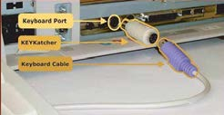
kendilerini tanıtarak yaklaşıp şirketlere ve bireylere ait kullanıcı kodu veya erişim bilgileri gibi hassas verileri ele geçirebilir.
Senaryo:
Dolandırıcı, börekçinin dükkânına POS cihazı servisinden geldiğini söyler ve yaka kartını göstererek cihazda güncelleme yapılması gerektiğini mağaza sahibine söyler. POS cihazını geçici olarak söküp bakımını yapmak üzere teslim alır. Bir saat sonra POS cihazındaki (olmayan) arıza giderilmiş ve yerine takılmıştır. Üç gün sonra, bir müdahale için ikinci kere gelir artık mağaza sahibi zaten teknisyeni tanıdığı için daha rahattır. Dolandırıcı bu sefer daha kısa bir süre için POS cihazını teslim alır ve geri getirir. Dolandırıcı hedefine ulaşmış ve POS’a kopyalama cihazı takmıştır.
Destek Eleman (Hizmetli):
Şirketlerde, temizlikçi/geçici eleman gibi çalışan kişiler bir çok bilgiye kolayca ulaşabilirler.
Masaları silen eleman, çevrede kimsenin olmadığı bir anda ile klavyenin bağlı olduğu yere ara bir aparat takarak sokete klavyeyi takar. Klavye ile bilgisayar arasında bir şifreleme (encryption) olmaması nedeniyle aparat klavyeden yazılan her türlü bilgiyi depo-lamaktadır. (Aparatı çıkarmak bir sonraki temizliği bekler)
Görsel 3: Key Logger Hardware
İkna/Korkutma:
Kullanıcı üzerinde empati yada endişe yaratarak usulsüz işlemler yaptırıp bilgi alır.
Müşteri, kendisini kamu görevlisi olarak (polis, savcı, hâkim, banka çalışanı vb.) tanıtan kişiler tarafından aranarak “terör örgütü ile ilişkisi olduğu, banka hesabının terör örgütü tarafından kullanıldığı, cep telefonu numarasının kopyalandığı, bu hat üzerinden üst düzey kişilere uygunsuz içerikli SMS gönderildiği” vb. söylemler ile korkutulmakta ve kontör/TL yüklemesi, para transferi yapması konusunda ikna edilmektedir.
İlk yıllarda kontör/TL transferi şeklinde görülen bu tarz dolandırıcılık yöntemleri, daha sonra, gelişen teknoloji ve yeni ikna yöntemleri ile birlikte, bankaların ürün yelpazesindeki gelişmeler ve hizmet kalitesinin artmasına paralel olarak (kartsız para transferi, cepten cebe para transferi, hızlı kredi tahsi-si, internet ve mobil bankacılığı kullanımının artması vb.) para transferine, şubeden ve ATM’den nakit çektirilerek dolandırıcıya teslim etme yöntemlerine dönüşmüştür.
Senaryo1:
Kendisini savcı olarak tanıtan kişi banka müşterisine, banka hesaplarının terör örgütü tarafından ele geçirildiğini ve acilen bankaya gitmesini söyler. Panik olan banka müşterisi, hangi bankada hesabı olduğunu telefondaki savcıya iletir. Savcı çok gizli bir operasyon içinde olduklarını, çevresinde bulunan hiç kimseye bu bilgileri vermemesi gerektiğini ve telefonunu sürekli açık tutmasını tembihler. Telefondaki savcı tarafından, banka personelinin de bu örgütle bağlantısı olduğu ve onlara da güvenmemesi gerektiği telkininde bulunulur. Banka müşteri tüm parasını vadesini bozarak bankadan çeker. Banka memuru müşterinin telaşlı halinden şüphelenir, parasını neden almak istediğini sorar, ancak telefondaki savcının sözlerine inanan müşteri banka personelini “sana ne benim param, neden zaman istersem çekerim” diye tersler. Açık telefonda bekleyen savcı bu gizli operasyonun gereği olarak müşterinin parasını koruyacağını belirtir ve elindeki paraları Meşe sokağındaki çöp bidonunun yanına bırakmasını söyler. Müşteri tüm parasını çöp bidonunun yanına bırakarak sokaktan uzaklaşır. Telefondaki savcı bu gizli operasyon sonunda parasını savcılıktan gelip alacağını belirtir ve kendisini arayacağını söy-8 | Sayfa
I / Bölüm


ler. Müşteri uzun süre bekledikten sonra savcıdan telefon gelmeyince savcıya ulaşmaya çalışır. Sonuç alamayınca durumu yakınlarına anlatır. Ancak iş işten geçmiştir, yakınları müşteriye dolandırıldığını söyler. Bir kamu kurumundan üst düzey yönetici olarak emekli olan müşteri hakkını aramak üzere bu dolandırıcılık eylemini gerçekleştiren kişi(ler)den şikâyetçi olur.
İkna/korkutmaya yönelik dolandırıcılık örnekleri kurum çalışanlarına da yapılabilir.
Senaryo 2:
Firması adına banka müşteri hizmetlerini panik içerisinde arayan şahıs, şifresini unuttuğunu, büyük bir reklam projesinin bedelini ödemek için son gün olduğunu ve ödemeyi yapamaması halinde işverenin kendisini işten çıkarabileceğini belirtir. Bu durumdan etkilenen müşteri hizmetleri çalışanı arayan kişiye firma adına yeni bir erişim şifresi tanımlar ve ödemeyi yapabileceğini iletir. Kişi erişim şifresini elde ederek firmanın tüm hesapları üzerinde her türlü işlemi yapma yetkisini almış olur.
Senaryo 3:
Kişi internet arama motorunda reklam amacıyla gösterilen “kart borç bilgisini öğrenme” linkine güncel borcunu öğrenmek için tıklar. Sitede yer alan finans kurumları logoları ve banka logoları güven oluştur-maktadır. Bu nedenle, hiç düşünmeden kartının 16 haneli numarasını, CVV2 kodunu, son kullanma tarihi bilgilerini ve hatta cep telefonu numarası, müşteri numarası ve annesinin evlenmeden önceki soyadı bilgisini doldurur ve borcunu öğreneceğini düşünerek “Gönder” butonuna basar. Ancak sistem çalışmaz. Birkaç gün içinde kendisini banka görevlisi olarak tanıtan bir şahıs arar ve kartından yapılan 1.000 TL’lik harcama işlemini kendisinin yapıp yapmadığını sorar. Tabii ki harcama ona ait değildir!
Banka görevlisi işlemi iptal edebilmesi için cep telefonuna göndereceği 6 haneli rakamdan oluşan şifreyi kendisine okumasını ister. Birkaç saniye içinde cep telefonuna şifre gelir, yapılan işlemin iptal edileceğini düşünen kişi numaralardan oluşan şifreyi telefondaki banka görevlisine okur. Kartından kendisinin yapmadığı bir harcamanın iptal edilmesinden mutlu olarak telefonu kapatır. Ancak birkaç saat içinde yine kendisini banka görevlisi olarak tanıtan birisi tarafından aranarak, internet şube üzerinden gönderilen 20.000 TL (ki bu vadelide bulunan tüm parasıdır) para transferinin kendisi tarafından yapılıp yapılmadığını sorar. Öğrenir ki daha önce cep telefonuna gelen ve telefondaki kişiye okuduğu şifre aslında İnternet Bankacılığı şifresidir ve bu bilgiyi dolandırıcı ile paylaşmıştır.
Kontör/TL Yükleme:
Kendisini polis/savcı vb. olarak tanıtan dolandırıcı, korkutma ve ikna yöntemini kullanarak, bankaların hizmet kanalları (ATM, İnternet ve Mobil Şube, Çağrı Merkezi) veya GSM Bayileri üzerinden mağdurun kontör/TL yükleme veya para transferi işlemi gerçekleştirmesini sağlamaya çalışmaktadır. Bu şekilde TL yüklenen telefon hatlarının, sahte kimlikle temin edildiği, kısa süreli kullanıma açık hatlar olduğu ve hat sahiplerine ulaşmanın mümkün olmadığı görülmüştür.
Bu durumda, zarar gören banka müşterisinin en kısa sürede bankasına bilgi vermesi, kolluk kuvvetle-rine bildirmesi veya savcılığa şikayette bulunması, para aktarılan telefon hatlarındaki bakiyeleri bloke edilmesi ve iadesi ile ilgili süreci başlatması önerilir.
Online Formlarda/Organizasyon Web Sitelerinde Sörf: Kurbanlara, önceden hazırlanarak gönderilen formların doldurulması istenilmekte, bu şekilde bilgi toplanabilmektedir.
Senaryo:
Dolandırıcı tarafından kurbana yaygın olarak bilinen bir mağazada kullanmak üzere büyük bir indirim içeren elektronik ileti(e-posta) gönderilir. E-posta gönderimi bilinen mağazadan geliyormuş veya diğer tanınan on-line indirim sağlayan fırsat firmalardan gelmiş gibi gösterilir. Yalnız bu 100 TL’lik 9 | Sayfa
I / Bölüm
indirimden faydalanabilmek için kurbandan 5 TL’lik bir harcama yapılması beklenmektedir. Online bir form formatında kurban tarafından kredi kartı bilgileri, mağazadaki indirimden faydalanmak amacıyla Ters Psikoloji:
Dolandırıcı hedefe erişim için önce sorunu bulur ya da yaratır, bu bir sabotaj da olabilir, sonra sorunu çözer ve karşısındakine güven uyandırır. Bundan sonra ise hedefini gerçekleştirecek ortamı bekler.
} Sabotaj: önce kullanıcı makinesinde bir arıza yaratır
} Pazarlama: kullanıcı çaresiz kalınca ben yardımcı olabilirim diye ortaya çıkar.
} Destek: destek verme aşamasında kullanıcıların hassas verileri ele geçirir.
ile hızlıca doldurulur ve dolandırıcıya iletilir. Dolandırıcı ise, kart limitinin tümünü kullanır.
Şirkete Yapılan Ziyaretler:
Bir şirkete iş yapmak maksadı ile giden kişi, çalışanın masasında bıraktığı evraklardan bilgi toplar, evrakın orijinalini dahi alır.
Senaryo:
Otogaleride yapılan bir araba pazarlığında, satış temsilcisinin verebileceği oranlar, galeri müdürünün yetki seviyesine gelmiştir. Dolandırıcı bahse konu fiyatın aşağıya çekilmesi için temsilciye son bir ricada bulunur: “Git müdürüne sor, eğer o da hayır derse senin verdiğin orandan yapalım...” Satış temsilcisi döndüğünde, müşterisini yerinde bulamaz. Müşteri, masadaki farklı müşterilere ait kredi başvuru belgeleri ve kimlik bilgilerinin de bulunduğu belgeleri alarak kaybolmuştur.
Şifre Tahminleri:
Kullanıcının genel alışkanlıkları önceden araştırılıp, bunların denenmesi ile sonuca varılabilir. Diğer yandan kullanıcının sosyal bilgileri araştırılarak da aynı şekilde sonuca ulaşılmaya çalışılabilir (tuttuğu takım, doğum tarihi gibi).
Ön Ödeme Dolandırıcılığı:
Ön Ödeme Dolandırıcılığı (Advance-Fee Fraud), gelişen iletişim imkânlarından da yararlanarak, insanların kısa süre içinde büyük kazançlar elde edecekleri vaadiyle, çeşitli adlar altında mağduru ön ödeme yapmaya ikna edilmesine dayalı bir dolandırıcılık türüdür.
Bu dolandırıcılık türünde, elektronik posta ya da mektup vasıtası ile dolandırıcılar kendi ülkelerinden transfer etmeleri gereken bir tutarı sizin hesabınıza makul bir gerekçe ile göndermek istediklerini ifade ederler. Transfer edilecek tutar içerisinden aracı için ödenecek bir pay vardır (%10 - %18 vb.) Bu transferin gerçekleşmesinden hemen önce, paya düşen komisyonun karşılanması gerektiği ifade edilir ve bir hesaba yatırılması istenir. Yatırıldığında başka isimdeki bir komisyon için bir tutar daha yatırılması istenir. Ancak para transferi asla gerçekleşmeyecektir.
Vaadcilik:
Şu an oldukça popüler olan bu yöntem ile kurbanın kredi veya kredi kartı ile ödediği bir takım masrafların (kredi kartı yıllık aidat, dosya masrafı, hesap işletim ücreti, sigorta aidatları vb.) geri alınabi-leceği yönünde bir bilgi kurbana SMS ile iletilmektedir. Hukuk bürosu tarafından işlem yapılıyor intibaı yaratılarak kurban tuzağa düşürülür. Burada amaç müşterinin kredi kartı bilgilerini ele geçirmektir.
Gelen SMS metnine inanan kişi masrafların geri alınacağı düşüncesi ile telefondaki kişiye tüm kart bilgilerini (16 haneli kart numarası, kartın son kullanma tarihi ve CVV kodu) sözlü olarak verir. Dolandırıcı tarafından ele geçirilen kart bilgileri ile müşterinin kartından harcama yapılmak suretiyle müşteri dolandırılır.
10
10 | Sayfa
I / Bölüm
D. Sosyal Mühendislik Dolandırıcılıklarının Olumsuz Etkileri ve Korunma Yöntemleri Dolandırıcılık vakalarının olumsuz etkileri aşağıda gibidir:
} İtibar kaybı
} İyi niyet kaybı
} Finansal zarar
} Bilgilerin geri dönülmez ifşası
} Hukuki sorunlar, cezalar
} Kurum varlık zararları
} Önlemeye dair yatırım maliyetleri
} Zaman kaybı
} İşgücü kaybı
} Güven kaybı
Dolandırıcılığı kendine iş edinmiş kişiler kendilerine inanılması için ellerinden ne geliyorsa yaparlar.
Bu kişiler mağdur konumdaki müşterilerin güvenlerini kazanmayı amaçlarlar. Bu güveni kazanabilmek adına çok samimi, kibar veya jest içeren davranışlar sergilerler. Hatta bir kademe ileri de giderek mağdurlar ile duygusal ilişki içinde olabilir veya maddi manevi hediyeler vermekten kaçınmazlar.
Kısaca, kişisel, maddi veya kart bilgiler tanınmayan rastgele kişilerle paylaşılmamalı, özellikle kişisel bilgilerin gizliliği konusunda duyarlı davranılmalı, yardım amacıyla yaklaşan kişilere karşı dikkatli olun-malıdır.
11 | Sayfa
11
I / Bölüm
II.
BÖLÜM
12 | Sayfa
Bilgisayar ve haberleşme teknolojileri hakkındaki bilgisini kendisine ait olmayan ve bazen de gizli verilere ulaşmak, ağlar üzerinde yasal olmayan zarar verici işler yapmak için kullanan kişilere internet bilgi hırsızı (hacker, bilgisayar korsanı) denir. Bu bilgisayar korsanlarının genel olarak amaçları; bir programda, sistemde veya güvenli bir ağdaki açıkları tespit ederek, elde ettiği bilgileri, esas sahiple-rinin isteği dışında, kendi faydası için kullanmaktır.
Bilgisayar korsanlarının saldırısına uğramak günümüzde sık görülen bir durumdur. Çok çeşitli saldırı yöntemleriyle bilgisayar sistemlerine erişebilen korsanlar, bilgisayara girilen her türlü şifre, parola, kişisel bilgileri gibi önemli bilgilere ulaşabilmekte ve bunları kullanarak kurbanlarını mağdur duruma düşürebilmektedir. Bir bilgisayar korsanı, kurbanının bilgisayarındaki tüm bilgileri silebilir, bilgi ve belgeleri çalabilir, şifreleyebilir veya sisteme fiziksel olarak zarar vererek kullanım dışı dahi bırakabilir. Bilgisayar korsanları genellikle kullanıcıların dikkatsizliğinden ve bilgi yetersizliklerinden faydalanır. Korsanların saldırılarından korunmanın en iyi yolu, güvenlik açıkları konusunda kullanıcıların bilgi sahibi olmaları ve dijital ortamlarda gerçekleştirilen işlemlerde tedbirli olmalarıdır.
İnternette bilişim suçunun gerçekleşebilmesi için öncelikle kullanıcıların bilgisayarına (kişisel, bilgisayar, masaüstü bilgisayar, tablet, mobil telefon veya diğer erişim cihazları) bir takım casus yazılımların kurulması gerekir. Hiçbir casus program kendi kendine bilgisayar sistemlerine kurulamaz.
Bilgisayar korsanlarının kurbanlarına ulaşmaları genellikle iki yolla olur: Birincisi, kurban ile doğrudan irtibata geçerek zararlı içeriğe sahip dosya gönderimi yapılır, ikincisi ise, kurban farkında olmadan dolaylı yollardan bilgisayarın açıklarını kullanarak dilediği bilgiye ulaşır. Bilgisayar korsanlarının gönderdiği casus yazılımlar genellikle kurbanın kendi elleriyle kurması/çalıştırması sonucu aktif olur. Bunun yanında bizzat korsanlar tarafından da aktif hale getirilen casus yazılımlar da vardır. Casus yazılımlar, elektronik postanın dışında, sohbet, oyun, anlık ileti, sosyal medya ve paylaşım programları tarafından da kurbanların bilgisayarlarına yüklenebilmektedir.
Kötü niyetli kişiler, kurbanlarının bu programları bilmeden bilgisayarlarına kurması için pek çok yöntem geliştirmiş ve farklı yöntemler geliştirmeye devam etmektedirler.
Finansal yapılarından dolayı bankalar ve banka müşterileri dolandırıcıların saldırı yapmaya istekli oldukları hedeflerin başında gelmektedir.
Türkiye’de faaliyet gösteren mevduat bankalarının birçoğu müşterilerine internet bankacılığı veya mobil ban-kacılık hizmeti sunmaktadır. İlk internet bankacılık hizmeti 1997 ve ilk mobil bankacılık hizmeti ise, 2011 tarihinde verilmeye başlanmıştır. Bu dağıtım kanallarının ilk yıllarında dolandırıcılık eylemleri oldukça azdır.
Genel olarak dolandırıcılık eylemlerindeki ortak kurgu; müşterinin, özel bilgilerinin çeşitli yöntemlerle çalınması ve bu bilgiler kullanılarak müşteri adına ve bilgisi dışında işlem yapılması şeklindedir.
İnternet ve mobil bankacılık hedeflenerek gerçekleştirilen dolandırıcılık eylem girişimlerine yönelik bankalar tarafından alınan önlemler ve yasal otoriteler tarafından, mevzuat çerçevesinde tesis edilen düzenlemeler sonucu dolandırıcılık eylem girişimlerine bağlı oluşan kayıplarda önemli oranda azalma olmuştur.
Bununla birlikte, bilişim suçlarının farklı şekillerde ortaya çıkabileceğinin göz önünde bulundurulması, gelişen teknoloji ve bu teknolojiler ile gerçekleştirilen dolandırıcılık eylemleri hakkında güncel bilgi sahibi olunması gerekir.
13 | Sayfa
II / Bölüm
B. Kişisel Bilgilerin İnternet Üzerinden Elde Edilmesi İnternet bilgi hırsızları çeşitli yöntemlerle müşterilerin özel bilgilerini ele geçirmektedirler. Bu yöntemlerden en çok kullanılanlar aşağıda yer almaktadır: 1. Truva Yazılımları (Trojan)
Truva yazılımları ismini “Truva Atı”ndan almaktadır. Bir bilgisayar programına bağlanarak saklanan, tahribatını yaparken ise, programın olağan çalışmasına izin veriyormuş gibi gözüken virüslere “Truva atı” denir. Truva atları çoğunlukla, bulaştıkları bilgisayarlarda kullanılan şifre, kullanıcı adı gibi özel bilgileri ele geçirmek amacıyla kullanılır.
Tespit edilmesi oldukça zor olan Truva atı, genellikle sistemlere e-posta yoluyla bulaşmaktadır. Bunun dışında yoğun disklerden (cd), sayısal çok yönlü disklerden de (DVD), e-posta ekindeki (.jpg, .gif, .txt,
.doc, .xls gibi) dosyalara, bilgisayar oyunlarındaki “.exe” uzantılı uygulama dosyaları gibi pek çok yere gizlenebilir.
Truva atı içeren e-posta ya da ekindeki dosya açıldıktan veya uygulama çalıştırıldıktan sonra zararlı kodlar aktif hale gelir. Kurban durumun farkında bile olmaz. Örneğin; kullanıcı, hava durumu ile ilgili anlık bilgi veren bir program indirdiğini zannederken aslında bir “Truva atı” indirmiş olabilir.
Truva atı aktif olduktan sonra bilgisayara girilen her türlü şifre, parola, kredi kartı numarası gibi önemli bilgiler saldırgana ulaşabilir. Ayrıca e-postalar okunabilir, saldırgan disk sürücüyü açıp kapayabilir, dilediği dosyaları silerek hem maddi hem manevi zararlar verebilir. Saldırgan, kurbanın bilgisayarını yeniden biçimlendirebilir. Özellikle bilgisayar faresinin istem dışı hareket etmesi de sistemde Truva atının varlığının habercisi olabilir.
Truva atı bulaştırmaya yarayan yazılımlara örnek olarak; NetBus, BackOrifice, SubSeven ve ProRat verilebilir.
2. Tuş ve Ekran Kaydediciler (Keylogger ve Screenlogger) Tuş kaydediciler, bilgisayarda, klavye vuruşlarını anlık olarak kopyalayabilen ve bunları kaydederek e-posta yoluyla korsanın eline geçmesini sağlayan programlardır. Bu tür programlar klavye ile yazılan her şeyi kaydedebilme yeteneğine sahiptir. Elde edilen kayıtlar sistemde “.txt” uzantılı metin dosyası olarak tutulur. Yapıları itibariyle kurbanların her türlü şifre ve özel yazışmalarını ele geçirmek için kullanılabilir.
Ekran kaydediciler ise, ekran görüntülerini kopyalayan ve bunları e-posta ile saldırgana ulaştıran programlardır. Yakalanan anlık görüntüler sayesinde o anda ekranda ne yapıldığı veya şifrelerin nereye yazıldığı kolaylıkla görünebilir. Tuş kaydediciler ve ekran kaydediciler dolandırıcılık eylemlerinde birbirlerini tamamlayan iki bileşen gibi çalışırlar.
Bu tarz yazılımlara örnek olarak; iSpyNow, Perfect Keylogger, Phantom verilebilir. Tuş kaydedici yazılımları; uzaktan erişime açık, yeterince korunmayan bilgisayarlara bilgisayar korsanları tarafından yüklenebileceği gibi kullanıcı tarafından oyunlar, e-postalar vb. yollarla farkında olmadan da yükle-nebilir. Tuş kaydedici yüklenmiş bir bilgisayardan internet şubesine giriş yapıldığında kullanılan tüm bilgiler bilgisayar korsanları tarafından ele geçirilebilir.
Ekran görüntülerini anlık resimler yerine film gibi hareketli görüntüler olarak kaydeden veya bilgisayarda kayıtlı tüm bilgilere erişim sağlayan Truva atları da mevcuttur. Bu tarz yazılımların, özellikle
“internet cafe” gibi çok sayıda kişinin ortak kullandığı ve yeterli güvenlik önlemi alınmamış bilgisayarlarda bulunma ihtimali fazladır.
14 | Sayfa
II / Bölüm
3. Phishing (Olta Saldırıları)
Olta saldırısı (phishing), anlam olarak İngilizce “password” (şifre) ve “fishing” (balık avlamak) kelime-lerin birleşiminden oluşturulmuştur.
Bir kişinin hassas bilgilerinin (şifre, parola, müşteri numarası, kullanıcı adı, kredi kartı numarası vb.) kod ve bilgilerinin elektronik ortamlarda ele geçirilmesini amaçlayan saldırı türüdür. Olta saldırısı internet üzerinde en çok kullanılan dolandırıcılık yöntemlerinden biridir.
Phishing metodu ile yapılan çevrimiçi olaylarda;
} Kredi, debit/ATM kart numaraları/CVV2,
} Şifreler ve parolalar,
} Hesap numaraları,
} İnternet bankacılığına girişte kullanılan kullanıcı kodu ve şifreler,
} Doğum tarihi vb. kimlik bilgileri,
gibi bilgiler ele geçirilmektedir.
Olta saldırılarında, internet aracılığıyla, finansal kurum ve kuruluşlar, resmi kurumlar veya alışveriş şir-ketlerinden gönderilmiş gibi görünen, acil ve çok önemli konular içeriyormuş izlenimi veren sahte e-postalar yayılır.
E-postanın konusu, müşteri bilgilerinin güncellenmesi veya şifrelerin değiştirilmesi olabilir ve içinde ilgili kurumların sayfalarının birebir aynısı şeklinde görünen internet sayfalarına giden linkler yer alabilir.
Örnek vermek gerekir ise;
“Tarafınıza x adlı kişiden y tutarında para transferi yapılmıştır. Lütfen aşağıdaki linke tıklayarak, internet bankacılığınıza giriş yapın ve bilgilerinizi kontrol edin” gibi ifadeler içeren e-postalar gönderilir.
“Eğer internet bankacılığına girerek işlemi onaylamazsanız para transferi gerçekleştirilmeyecektir”
gibi tuzağa düşürücü anlatımlar da bulunabilir.
Bu mesajlarda kişilerin; şifre, parola, müşteri numarası, kullanıcı adı, kredi kartı numarası ve kodları sanki kurum tarafından isteniyormuş gibi yazılır. Bu e-postalarda verilen linklere tıklayıp, kişisel bilgilerini ekrana giren kullanıcı bu sitelerin gerçek siteler olmadığını fark etmemekte ve özel bilgileri çaldırmaktadır.
Dolandırıcılığı gerçekleştirecek kişi(ler) olta saldırısı yöntemi ile edindikleri bilgileri kullanarak müşterilerin banka hesaplarına erişmekte ve varlıklarını ele geçirmektedir. Ele geçirilen hesaptan paranın çekilmesi aşamasında, daha az şüphe çekebilecek üçüncü kişiler kullanılır.
Para çekme işlemlerinde kullanılan üçüncü kişiler internet üzerinden sahte iş ilanları yoluyla bulunduğu örneklerle karşılaşılabilmektedir. Bu kişilere menfaatler karşılığı görevler verilir. İş ilanlarında çaba har-camadan kolay para kazanılacağı şeklinde bilgi verilir, başvuruda bulunan kişilerin hesap bilgileri alınır ve bu kişilere ait hesaplar kullanılarak olta saldırısı yöntemi ile ele geçirilen hesaplardan para transferi yapılır. Bu yöntemle, müşteri ve hesap bilgilerini ele geçiren ve dolandırıcılık olayının asıl faili olan kişiler kimliklerini gizler ve aracı olarak kullandıkları üçüncü kişilere suçu yükleyerek zaman kazanmış
olurlar.
Phishing’ten korunmanın en temel yolu, kullanıcının bilinçli ve dikkatli olmasıdır. İnternet bankacılığı veya mobil bankacılık hizmeti alınan bankanın güvenlikle ilgili yaptığı bilgilendirme ve güvenlik açıkla-15 | Sayfa
II / Bölüm
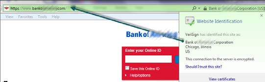
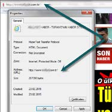
malarına uygun hareket edilmeli ve belirlenmiş güvenlik önlemlerinin tamamı öğrenilerek uygulanma-lıdır. Bu nedenle oltalama hakkında tespit nasıl yapılır, şüphe nasıl duyulur bunları aşağıda inceleyelim: Sahte Alan Adı (Fake Domain)
Bilinen adı www.google.com olan bir alan adının www.googlee.com olarak kullanımı sahte siteye bir örnektir.
Firmanın markanın ismini yayması, tanıtması çok büyük bir emektir. Durup dururken bunu farklılaştırıl-ması mantığa uygun değildir.
SSL (Secure Socket Layer) Sertifikası
Sürekli kullanılan ve SSL sertifikası ile korunan sitede sertifika kilidinin olup olmadığına dikkat edilmelidir.
SSL sertifikasının görsel olarak olması durumunda bile, sertifikanın kimin ismine verildiği ve o an hangi sitenin içinde olduğunuzu karşılaştırılmalıdır.
Görsel 4: SSL Sertifikası
Bilerek Yanlış Kullanıcı Adı ve Şifre Kullanmak Bir sitedeki kullanıcı adı/şifre gibi özel bilgilerin sorulduğu formlar ile ilgili olarak kuşku oluşması durumunda, yanlış bir kullanıcı adı ve parolası ile sisteme, iki kere hatalı girilmesi denendiğinde, genelde sahte siteler kuşku uyandırmamak amacıyla doğru siteye yönlendirirler.
Sitenin İçinde Kullanılan Bir Görselin Kontrolü (Reklamlar Hariç) Görselin üzerine sağ tık (klik) ile özellikler (properties) seçeneği açıldığında, görselin site ismi ile aynı olup olmadığı anlaşılacaktır.
Görsel 5: İnternet sitesi özellikleri
16 | Sayfa
II / Bölüm
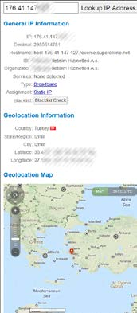
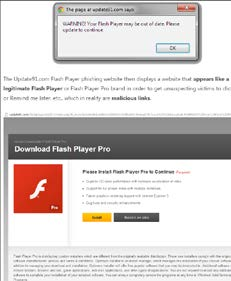
Sahte E-Postalar
İsim benzerliğinden faydalanarak sahte e-posta tespiti yapılabilir, ancak çoğu zaman kötü niyetli kişi elektronik posta adresini birebir yazdırabilmektedir. Bilinçli bir kullanıcı e-posta ile talep edilen şahsına ait bilgileri vermekten uzak durur. Mesela, bir banka müşterilerinden özel bilgilerini e-posta vasıtasıyla isteyecek kadar fevri davranmaz.
Bilinçli bir kullanıcı, 1.500 TL tutarında ki bir ürünün, 200 TL’ye satıl-mayacağını anlar, bunun hesabını yapabilir ve kendisini yönlendire-cek linkten uzak durur.
Tanımadığı bu siteye kart numarası, güvenlik kodu vade gibi bilgileri vermesi kazanılacak 1.300 TL değil, kaybedilecek kart limiti anlamına gelebilmektedir.
Bildiğiniz bir kişiden gelen ancak tuhaf bir e-postanın IP adresinin, kişinin yaşadığı bölge ile ilgili olup olmadığının kontrolü işe yara-yabilir.
Bunun için arama motoruna “lookup IP address” yazılarak, IP
lokasyon kontrolü yapabilecek siteler bulunup, kullanılabilir.
Görsel 6: IP arama sayfa örneği
Phishing amacıyla kurulmuş bu siteler, cazip bir ürünü ya da hizmeti ücretsiz sunduğunu vaad edebilir. Örneğin, ücretsiz virüs taraması teklif edilerek veya “Flash Player’ın güncellenmesi mesajı verilerek geri planda virüs uygulamasının yaygınlaşması veya bilgisayarlara yüklenmesi sağlanabilir.
Bu şekilde verilen mesajlara dikkat edilmeli ve itibar edilmemelidir.
Görsel 7: Zararlı yazılım yükleten bir site 17 | Sayfa
II / Bölüm
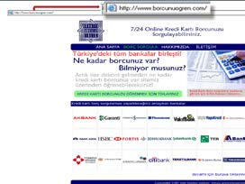
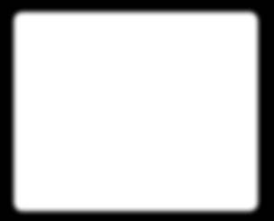
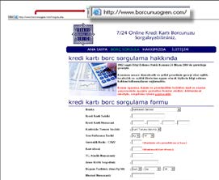
Bannerlar, Reklamlar, Pop-upEkranlar
Bir kere tıklandığında, kontrolsüz olarak istenmeyen bir say-fanın açılış sayfası olarak tanımlanmasına veya farenin istem dışı hareket etmesine neden olunabilir.
Görsel 9: Banner, Reklam, Pop-Up Ekranı
Anti-Virüs ve Güncellemeleri
Bilgisayarın resmi güncellemelerinin yapılması, işletim sistemine ait güvenlik duvarı yazılımının aktif tutulması, güncel ve kaliteli bir anti-virüs programının kullanmasına özen gösterilmelidir.
Aşağıda bazı sahte site örnekleri görsellerin-
den de anlaşılabileceği gibi genel olarak, kul-
lanıcıları kandırabilmek için sanki resmi, yasal
bir site izlenimi verebilmek amacıyla banka
logoları, benzer alan adları kullanılabilmektedir.
Bu tarz sahte sitelerin hepsinin ortak noktası,
bir şekilde kullanıcıyı tuzağa düşürmek sure-
tiyle, kullanıcının özlük bilgileri veya finansal
bilgileri ile kredi kartı bilgilerinin ele geçirilmek istenmesidir.
Görsel 9: Sahte bir internet sitesi www.
borcunuogren.com
Görsel 10: Müşterilerin kredi kartı borç bilgi-lerine ulaşabilecekleri belirtilerek kart ve kişisel bilgilerinin elde edilmesi hedeflenmektedir.
18 | Sayfa
| Sayf
II / Bölüm
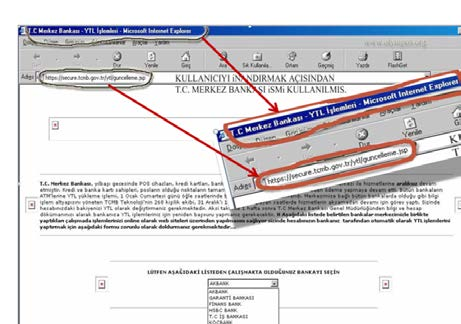
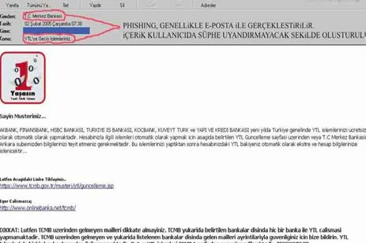
Görsel 12: Sahte siteyi inanılır kılmak için kullanılmış yöntemler.
Görsel 13: Phishing için hazırlanmış bir e-posta metni.
19 | Sayfa
II / Bölüm
4. Vishing (Voice Phishing) Olta Saldırıları
Vishing ses ile aldatma yöntemidir. Bu nedenle phishing kelimesindeki “p” harfinin yerine voice keli-mesinin ilk harfi kullanılarak “ses aldatmacası” anlamında kullanılmaktadır. Vishing, sosyal mühendislik vakalarında teknolojilerin getirdiği imkânlarla da desteklenerek aranılan kişiden daha kolay bilgi alınmasını hedeflemektedir. Buradaki teknolojik imkân yurt dışı internet servis sağlayıcılardan (proxy) faydalanarak aranılan kişiye, arayan olarak istediği numarayı göstermesidir.
Vishing dolandırıcılık metodu ile, müşterilerinin hesap numaraları, kredi kartı bilgileri ve bunun gibi kişisel bilgilerini elde etmeye yönelik gönderilen e-postalar ve bu e-postaların içeriklerinde verilen çeşitli telefon numaralarına yönlendirmeler yapılır. Bu sahte telefon numaraları kurban tarafından arandığında dolandırıcının daha önceden hazırladığı banka sesli yanıt sistemini ve çağrı merkezini taklit eden bir sistem çıkmakta ve dolandırıcılar bu yöntem sayesinde kurbana ait kişisel bilgileri ele geçirebilmektedir.
Senaryo:
Ailesinin gayrimenkul imparatorluğunun başına geçen Cemal Bey, işlerinin çok yoğun olduğu bir gün sürekli çalıştığı ve güvendiği X Banktan, bir e-posta alır. Aldığı e-posta, ona hesaplarının 2 gün içinde pasif hale geleceğini çok acil 0(850) *** ** ** numaralı çağrı merkezini arayıp, hesaplarını aktif hale getirmesini tembihler.
X Banktan gelmiş gibi görünen bu e-postaya güvenen Cemal Bey, belirtilen çağrı merkezini arar.
Düzmece çağrı merkezi sesli yanıt sisteminden de hiç şüphelenmeyen Cemal Bey, hesaplarını aktif et-tirmek için kredi kartı bilgilerini sisteme tuşlar ve işlemlerini sonlandırır. Oysaki kart bilgileri çalınmıştır.
5. Wi-Fi Dolandırıcılığı
Bu yöntem ile dolandırıcılar tarafından tanınmış bir cafe, otel, lokal gibi bir yerin aynı adlı Wi-Fi erişim noktası oluşturulmakta, bu hizmet ücretsiz olarak sunulmakta ve kullanıcılara sağlanan bir ara yüz ile kişisel bilgileri veya internet bankacılığına bağlanırken girilen bilgileri alınmaktadır. Kullanıcıların farkında olmadan verdikleri bu bilgiler dolandırıcıların eline geçmekte ve dolandırıcılık amacıyla kullanılmaktadır.
6. Pop-Up Ekranlar
Bir arıza, geliştirme, erişim sorunu, yardım teklifi gibi içerikle kullanıcı karşısına çıkarılan ekranlara kullanıcı kodu ve şifresi girilmesi istenerek erişim yetkileri çalınır.
Bu dolandırıcılık tipinde, kullanıcı bir pop-up mesajı ile makinesinde tespit edilen bir eksiklikten dolayı bazı programların çalışmayacağına dair bir mesaj çıkarır. Aynı mesaj kendisine “şimdi yükleyin” diye ücretsiz yardımcı bir program teklif eder.
7. Spam E-Postalar
Çoğu zaman istenmeyen mesajlar olarak adlandırılan bu elektronik postalar, içeriğinde zararlı yazılımlar taşıyabildiği gibi, zararlı yazılım yayan sitelere de yönlendirme yapabilmektedirler.
Kötü niyetli kişiler, kurbana ait özel bilgileri teknolojik imkânlar kullanarak casusluk, dinleme gibi yöntemler ile ele geçirir. Özellikle kurumlarda çalışan temizlik hizmet personeli veya kurbana yakın görünen güvenini kazanabilen kötü niyetli kişiler, klavye kablosunun ucuna takacağı bir kopyalama aparatı (donanımsal keylogger) ile gün boyu çalışanın yazdıklarını veya ekranını kopyalayacak, bir son-20 | Sayfa
| Sayf
II / Bölüm
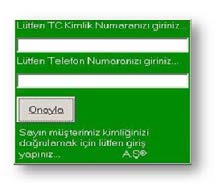
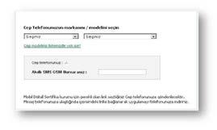
raki temizlik gününde bilgiler şirket dışına çıkarılmış olacaktır.
9. Teknoloji Kaynaklı Zararlıların Bankacılığa Etkisi İnternet kullanımının artmasına paralel olarak İnternet Bankacılığı hizmetlerini kullananların sayısı da her geçen gün artmaktadır.
İnternet Şube girişlerinde Tek Kullanımlık Şifre uygulaması Bankacılık Düzenleme ve Denetleme Kurumu’nun 14.09.2007 tarih ve 26643 sayılı “Bankalarda Bilgi Sistemleri Yönetiminde Esas Alınacak İlkelere İlişkin Tebliğ” gereğince 01.01.2010 tarihinde devreye alınmıştır.
2010 yılında İnternet Bankacılığı giriş işlemlerinde tek kullanımlık şifre (TKŞ) uygulamasının zorunlu hale gelmesiyle bilgisayar korsanlarının hedef noktası bu sefer internet şubesi erişim bilgileri ve SMS
olarak gönderilen TKŞ bilgisinin ele geçirilmesine yönelik zararlı yazılım veya yöntemler geliştirmek olmuştur. Bu yazılımlar dönem dönem değişik adlarla (Zeus, Tinba, FatMAL, OBAD, Surviver vb.) bankacılık sektöründe görülmüş ve sosyal ağların yaygınlaşmasıyla yayılım göstermiştir.
Bu zararlı yazılımlara, phishing e–postalarının eklentisi olarak, mobil uygulama, oyun marketlerinde ve bazı internet sitelerinde güvenlik uygulaması olarak rastlamak mümkündür. Phishing yoluyla müşteri bilgisayarına bulaşan virüs; müşteri internet şubesine girdiği anda TCKN, cep telefon numarası ve telefon cihazının modelini soran bir ekran (pop-up) açılmasını sağlamaktadır. Müşterinin girmiş olduğu bu bilgiler neticesinde cep telefonuna gelen mesaj ile bir bağlantı adresi gönderilir. Mesaj içeriğindeki uygulamanın yüklenmesi neticesinde SMS içeriğini elde etmeye çalışan zararlı yazılım cep telefonuna da bulaşmış olur. Bu sayede İnternet veya Mobil şubeye giriş ile işlem onaylamada gönderilen SMS
şifre bilgilerinin dolandırıcılara yönlendirilmesi sağlanmaktadır.
Görsel 14: Faaliyete geçmiş Virüsün
çıkardığı Pop-Up ekran örneği.
Görsel 15: Faaliyete geçmiş Virüsün
çıkardığı bir diğer Pop-Up ekran
örneği.
21 | Sayfa
II / Bölüm
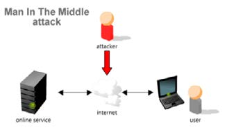

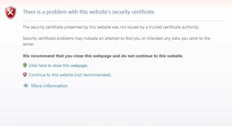
10. Man InTheMiddle Attack (MitM)
Bu dolandırıcılık yöntemi isminden de anlaşılacağı gibi saldırganın sunucu ve istemci arasına girerek, kullanıcıların bilgilerini ele geçirmek, şifre almak ve yerel ağda kullanıcıların hesaplarını elde etmek için kullanılmaktadır. MitM dolandırıcılık yöntemi daha çok internetin genel kullanıma açık güvensiz alanlarda gerçekleşmektedir. MitM saldırıları farklı şekillerde olabilmektedir.
Genel olarak anlatmak gerekirse:
Kullanıcı ortak ağ (genel kullanıma
açık) üzerinden internette dolaşırken
saldırgan bu ağ üzerinden aktarılan
bilgileri dinlemektedir (Sniffing yön-
temi). Saldırgan, kullanıcı ile internet
sitesi arasındaki bağlantıyı keserek,
gerçek siteye ait .html belgesinin
içine yerleştirdiği gerçek site benze-
ri sahte bir .html sayfasına bağlantıyı
yönlendirir. Kullanıcı her şeyden
habersiz banka sayfasına girerken,
aslında saldırgan tarafından yön-
lendirilen ve banka sayfasının birebir
kopyası olan farklı bir sayfaya girmiştir.
Görsel 16: Man-In-TheMiddle Saldırısı.
Bu yöntemle, bankaların müşterilerine internet şubeye giriş yapmaları için bankalar tarafından gönderilen TKŞ (tek kullanımlık şifre) bilgisi de saldırganın eline geçmiş olur.
MitM ile ağ trafiğinin rahatlıkla saldırgan üzerine yönlendirilmesini önlemek için Hypertext Transfer Protocol Secure (HTTPS) kullanılmaktadır. Fakat kullanıcıyı takibe alan bir saldırgan varsa ve MitM
ile araya girmişse SSL bağlantılarını da taklit edebilir. Güvenli bağlantı yapmak istenildiğinde tarayıcı sitenin sertifikasyon sorunu olduğunu söyleyecektir.
Birçok kullanıcı sertifika hatasının ne
olduğunu bile anlamadan yaptığı
işin devam etmesini isteyerek sahte
sertifikayı onaylamaktadır. Sahte
sertifika kullanıcı tarafından güveni-
lir olarak kabul edildiği anda yapılan
bağlantı SSL* olsa bile Facebook,
Messenger şifreleri ve yapılan tüm
yazışmalar saldırgana ulaşabilmekte-
dir.
Görsel 17: Sertifika uyarısı.
Sonuç olarak, ortak kullanıma açık alanlarda yapılan bağlantılarda tarayıcı sertifika konusunda uyarı vermesi durumunda bağlantının kesilmesi ve devam edilmemesi en güvenilir yol olacaktır.
22 | Sayfa
| Sayf
II / Bölüm

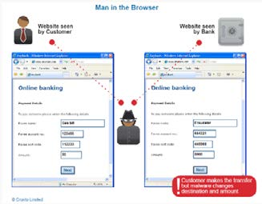
Senaryo:
- Ücretsiz açık bir Wi-Fi bulup bağlandım, sonra da yazışmaya başladım...
- “Sema’cığım sana olan borcumu şu an göndereyim, hazır bugün izinliyken hesap numaranı versene” (Yazışma trafiğini takip eden Halil mesajın harfine dokunmadan Sema’ya gitmesine izin verdi)
Sema ayın ortası olması nedeniyle “acelesi yoktu” derken bir yandan da hesap numarasını yazmayı da ihmal etmemişti; “acelesi yoktu canım. 123754 Taksim Şubesi – X Bank...” ve gönder tuşuna bastı.
Kısa sürede mesaj paketi, Halil’in elinin altındaydı. Mesajın içeriğini şöyle değiştirdi:
- Acelesi yoktu canım... 58897855 Karaköy Şubesi – Y Bank”
Bundan sonraki yazışmaları yapmış olduğu hile ortaya çıkmasın diye küçük müdahaleler ile takip etti.
“Gönderdim canım teşekkür ederim”
Sema ancak ertesi gün biraz da utanarak telefon açtı “Canım! Yanlış bir hesaba göndermiş olabilir misin?”
11. Man InTheBrowser Attack (MitB)
Man in the Browser dolandırıcılık yönteminde amaç kullanıcının şifresini almak yerine internet tarayıcısı üzerine zararlı yazılım yerleştirerek saldırı gerçekleştirmektir.
Zararlı yazılım içeren tarayıcı eklenti-
si kullanıcının yaptığı transferlere ait
tutar ve alıcı bilgisini değiştirebilir.
“MitB” yeteneklerine sahip internet
bankacılığı zararlı yazılımları arasında
Zeus veya Sinowal örnek verilebilir.
Görsel 18: Man in the Browser Saldırısı
Senaryo:
“Evet, benimle ilgisi yoktu ama e-postanın ekini açmak için yine de tıkladım!”
Güncel Anti-Virüs ile korunmamış bir bilgisayarda virüslü bir program çalıştırılmıştı. Bu zararlı yazılım, Banka ekranlarını taklit eden sayfaları müşterinin önüne getirmiş ve müşteriye özel kod ve şifreleri bizzat kendisinin girmesi ile çalıp dolandırıcıya iletmiştir.
23 | Sayfa
II / Bölüm

12. SIM Kart Yenileme ve Operatör Değişikliği
Müşteri adına düzenlenen sahte kimlikle, telefonunun çalındığını veya kaybolduğunu beyan eden sahtekârların GSM bayilerinden yeni bir SIM kart (Subscriber Identification Module) alarak kullanıcıların internet şifresini ele geçirmeyi amaçlayan dolandırıcılık şeklidir. Bu yöntemlerle SMS ile gönderilen şifre sorunsuz bir şekilde dolandırıcının eline geçmektedir.
Senaryo:
Mehmet işyerine yeni gelmiş ve yoğun bir iş gününe başlamadan önce ödenmesi gereken faturaları ödemek istiyordu. İnternet şubesine girdiğinde hesabında bir değişik olduğunu hemen fark ederek bankasının çağrı merkezini aradı. Çağrı Merkezi çalışanı;
- 5.000 TL X Bank’tan çekilmiş, 1.000 TL ATM’den çekilmiş, 2.500 TL kuyumcuda kullanılmış...
- 10.000 TL hesabınızdan çıkmış bu işlemi siz mi yaptınız? Diye sordu.
Peki, bu işlemler nasıl olmuştu? Acaba Mehmet nerede hata yapmıştı?
Dolandırıcı uzun zamandan beri Mehmet’in hesabını takip ediyordu. Tek sahip olması gereken Mehmet’in internet şubesi için girişte kullandığı tek kullanımlık şifreydi. Dolandırıcı, cep telefonuna gelen tek kullanımlık şifreyi nasıl alacağını da planlamıştı. Mehmet’in sahte kimliği ile operatör bayisine gide-cek, cep telefonu kaybettiğini beyan ederek yeni bir SIM kart talebinde bulunacaktı.
Mehmet’in bilgisayarını takip eden dolandırıcı, internet şubesine giriş için sahip olduğu tüm bilgiler ile internet şubesine girebilmişti.
C. Uluslararası Para Transferi Yapan Şirketler Dolandırıcılıkları Bazı şirketler uygun ücretler karşılığı dünya genelinde dakikalar içinde para transferi yapabileceğiniz hızlı, kolay ve yaygın para gönderme - alma servisi sunmaktadır. Hızlı para transferi şirketleri olarak adlandırılan bu uluslararası şirketler üzerinden gerçekleştirilen işlemlerde de dolandırıcılık olayları görülebilmektedir. Bu tarz dolandırıcılık yöntemleri özellikle Nijerya uyruklu kişiler tarafından kullanılmaktadır.
Senaryo1:
İthalat ve ihracat işleriyle uğraşan Victor Rose, Türkiye’de bulunan B Şirketi ile anlaşarak, mal ithali talebinde bulunur. İstemiş olduğu mala ait peşinatı, hızlı para transferi yapan bir şirket aracılığıyla göndereceğini, ürünlerin teslimatı sonrasında kalan bedeli de yine bu şirket aracılığıyla ödeyeceğini belirtir. B şirketi yaptığı bu anlaşmaya istinaden peşinat ödemesini alır ve ürünleri göndererek teslimat sonrasında alacağı ödemeyi beklemeye başlar.
Aslında, Victor Rose’un farklı bir planı vardır. B şirketine ait alıcı bilgilerini (MTCN, PASAPORT bilgileri vb.) sahte evrak işleri ile uğraşan kişilerle paylaşır. Gönderdiği 1.000 Euro tutarındaki paranın sahte pasaport düzenleyen kişilerce çekilmesi ve sahtecilikle ilgili 100 Euro komisyonu aldıktan sonra kalan tutarın kendisine geri gönderilmesini sağlar. Bu arada, yaptığı işlem dekontunu da (işlem hesap bilgileri) B şirketine göndererek sorumluluğunu yerine getirdiğini ve ödemeyi tamamladığını belirtir.
B şirketi bilgileriyle düzenlenmiş pasaportu elinde bulunduran kişi, hızlı para transferi şirketi aracılığıyla gelen havaleyi almak üzere X Bank’ın Kuşkucu Şubesi’ne gelir. Gişe yetkilisi, kendisine bir form uzatarak bilgileri doldurmasını ve pasaportunu görmek istediğini söyler. Kişi, alıcı olarak MTCN numarası ve tutar bilgisini net olarak bildirmiştir. Ancak, gişe yetkilisi, pasaportun sahte olabileceğin-den şüphelenerek, ikinci bir kimlik belgesi olup olmadığını ve gelen tutarın neye istinaden gönderil-24 | Sayfa
| Sayf
II / Bölüm

diğini de içeren detaylı bilgiler talep eder. Bu küçük sorgulama alıcı olduğunu iddia eden kişiyi rahatsız eder ve pasaportunu geri alarak tutarı çekmeden Kuşkucu Şubesinden ayrılır.
Aynı şahıs bu sefer X Bank, Kaygısız Şubesi’ne giderek hızlı para transferi yoluyla gelen havaleyi çekmek istediğini belirtir. Gişe yetkilisi, ödeme esnasında talep edilen bilgiler dışında, başka hiçbir bilgi talep etmeden ödemeyi gerçekleştirir. Sahte alıcı B şirketi 1.000 Euro bedeli çeker ve 100 Euro’luk komisyon bedelini cebine koyarak kalan bedeli aynı şube ile hızlı para transferi şirketi üzerinden Victor Rose’a geri gönderir.
Senaryo2:
İnternet üzerindeki bir sitede hayallerinin arabasını bulan Kadir Bey hemen satıcı ile iletişime geçer.
Satıcı ile e-posta üzerinden yaptığı görüşmede araç satıcısının Fransa’da yaşadığını ancak birkaç gün içinde iş için Türkiye’ye gelmek üzere olduğunu ve aracı kendisine getirebileceğini teyit eder. Ancak satıcı, aracı kendisine götürmek için Kadir Bey’in gerçekten alıcı olduğundan emin olmak istediğini, bu sebeple 5.000 ABD doları tutarı hızlı para transferi şirketi üzerinden alıcının kendi ailesinden birine Fransa’ya transfer etmesi ve dekontunu satıcıya göndermesini şart koşar.
Böylece alıcının ciddiyetinden ve parası olduğundan emin olabileceği, ayrıca tutar alıcının ailesinden birinin hesabına gönderildiğinden sadece tutarı görebileceği ama çekemeyeceği konusunda da ikna eder.
Kadir Bey hayalindeki araca piyasa fiyatının çok altında bir fiyata sahip olacağı için ikna olması zor olmaz. İstenileni yapar ve WU üzerinden kendi kardeşi adına 5.000 ABD doları tutarı Fransa’ya transfer ederek yaptığı işlem dekontunu satıcıya gönderir.
WU para alımı için gerekli olan tüm bilgileri (*MTCN, *Gönderici Ad/ Soyadı,*Gönderici Ülke, *Gönderilen para birimi, *Gönderilen tutar) Kadir Bey’in gönderdiği dekonttan elde eden dolandırıcı alıcı adına düzenlediği sahte kimlik belgesi ile 5.000 ABD doları bakiyenin sahibi olarak ortadan kaybolur.
Uluslararası ticaret yapan firmaların e-posta adresleri bilişim sistemlerini kötüye kullanan dolandırıcılar-ca ele geçirilmektedir. Ticaret yapan yüklenici firmanın e-posta yoluyla gönderdiği proforma fatura üzerinde bulunan IBAN bilgisi silinerek, yerine dolandırıcılara ait başka bir hesabın IBAN bilgisi yazılmakta ve bu proforma fatura yüklenici firmanın e-posta adresi ile malın alıcısı olan diğer firmaya bildirilmektedir. Mal karşılığı gönderilen tutar, ticaret yapan gerçek firma yerine kötü niyetli kişilere ait hesaplara alacak geçmekte ve bu sayede bakiye ele geçirilmektedir.
Senaryo1:
X Bank’ın Denizli Şubesinde bulunan Yıldız Dış Tic. Ltd. Şti. hesaplarına Malezya’da yerleşik Fresh Lemon firmasından 30.381 ABD doları havale gelmiş ancak, Kütahya şubesinin yüksek cirolu iş yeri bu paranın kendilerine ait olduğunu belirterek X Banka bildirimde bulunmuştur.
X Bank yetkilileri durumu muhabir banka aracılığı ile araştırınca Kütahya şubesindeki müşterilerinin e-posta adreslerinden gönderilen proforma faturanın değiştirildiği ve Yıldız Dış Tic. Ltd. Şti.
firmasının paranın alıcısı olarak ibraz ettiği proforma faturanın sahte olduğu ortaya çıkmıştır.
25 | Sayfa
II / Bölüm
Senaryo2:
Makas Petrol firmasının ticari ilişki içinde bulunduğu yurt dışındaki bir firmaya ait e-posta adresi dolandırıcılar tarafından ele geçirilmiştir. Dolandırıcılar sahte e-postayı kullanarak Makas Petrol fir-masına ekinde sahte belgelerin de bulunduğu bir e-posta göndererek, ticarete konu olan 200.000
ABD dolarının yurt dışındaki farklı bir hesaba transfer edilmesi istemiştir.
Makas Petrol, ticaret ilişkisi kurduğu firma ile yıllardır işlerini e-posta ile yazışarak gerçekleştirmektedir.
Bu yüzden e-posta ile kendisine yapılan bildirimden hiç şüphelenmez ve talebi yerine getirerek tutarı e-posta içeriğinde bildirilen hesaba gönderir.
Kısa süre sonra yurtdışı firma, ödemenin hala kendisine ulaşmadığı konusunda Makas Petrol’e dönüş
yapar. Bu sayede alıcı firmanın e-posta adresinin dolandırıcılar tarafından ele geçirildiği ve tutarın dolandırıcılara gönderildiği anlaşılır.
26 | Sayfa
| Sayf
II / Bölüm
II / Bölüm
III.
BÖLÜM
28 | Sayfa
III / Bölüm
Kötü niyetli kişiler tarafından düzenlenen sahte bilgi ve belgeler (kimlikler, sahte hesap cüzdanları, talimatlar vb.) yoluyla bankalara sahte başvurular yapılarak, bazı işlemler gerçekleştirilebilmektedir. Tek-nolojideki gelişmeler ve bankacılık sistemlerinde kullanımının yaygınlaşması ile birlikte banka sistemlerinde birçok başvuru kontrol mekanizması kurulmuş olmasına rağmen kötü niyetli kişilerin de gelişen teknolojiye ayak uydurarak tekniklerini geliştirdikleri görülmektedir. Dolandırıcılık girişimlerinin ortak noktası, hemen hemen tüm dolandırıcılık girişimlerinde sahte belge kullanılmasıdır.
Bankacılık sektöründe gerçek kişi müşteri kimliğinin tespiti için, nüfus cüzdanı, ehliyet ve pasaport belgeleri kullanılmaktadır. Her üç belgenin de kendine özgü güvenlik özellikleri bulunmasına karşın bu belgeler sahtecilik amacıyla da en çok kullanılan belgelerdir.
B. Sahte Bilgi ve Belgelerle Yapılan İşlemler
1. Kimlik Belgelerinin Kaybolması/Çalınması
Kaybolan veya çalınan kimlik belgelerini ele geçiren kötü niyetli kişiler bu kimliklerle bir takım kötü amaçlı işlemler yapabilmektedir.
} Şirket/şirketler kurulması
} Bankalardan çek karnesi talep edilmesi
} Çapraz kimlik çıkarılması
} Borç taahhütlerine girilmesi
} Sahte fatura düzenlemek suretiyle yasa dışı gelir elde edilmesi
} Cep telefonu hattı alıp tehdit, şantaj, terör vb. amaçlı kullanılması
} Yurtdışına çıkışta kullanılması
} Banka müşterisi olup İnternet Bankacılığına başvurulması
} Bankadan kredi veya kredi kartı başvurusunda bulunulması Bu durumda, gazeteye ilan verilebilir, emniyet makamlarına (pasaport şubesi/mahalli polis makamları, yurt dışı için konsolosluklar vb.) haber verilebilir, emniyet biriminden, “kaybolduğuna ya da çalındığına dair yazı veya tutanak” alınabilir ve. “Vergi Dairesine” bildirimde bulunulabilir.
2. Sahte Belge ile Bireysel Kredi/Kredi Kartı Başvurusu Gerçek kişilere ait kimlik bilgileri ve belgelerinin kötü niyetli üçüncü kişilerce ele geçirilerek bu belgeler ile bankalara kredi/kart başvurusunda bulunulabilmektedir.
Bilgi ve belgelerin ele geçirilme yöntemleri genel olarak:
} Hırsızlık (muhtarlık soygunları, cüzdan çalınması, gasp vb.),
} ‘Phishing’ internet siteleri,
} Çöp karıştırma/posta kutusu hırsızlığı,
} Dolandırıcılık (yüz yüze, sosyal medya, dolandırıcılık amaçlı telefon aramaları vb.),
} İnternet Ortamı (virüslü e-postalar, Truva atları vb.)
} Çeşitli nedenlerle toplanan kimlik fotokopileri/bilgileri (iş başvuruları, kurum içi suiistimaller, üyelik başvuruları, ürün almak için işyerlerine verilen kimlik fotokopileri vb.) olarak gruplandırılabilir.
Adına sahte başvuru yapılan müşteri bu durumdan haberdar olduğu anda vakit kaybetmeden mutlaka ilgili banka ile iletişime geçmeli, bankasına bilgi vermeli ve yasal mercilere şikâyette bulunmalıdır.
29 | Sayfa
III / Bölüm
IV.
BÖLÜM
Kartlı Ödeme Sistemleri
30 | Sayfa
IV / Bölüm
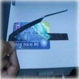


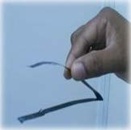
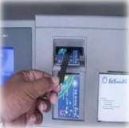
Müşterilerin otomatik para çekme makineleri (ATM) ve ödeme noktaları (POS) aracılığıyla banka kartları ile işlem yapması, 1980’li yılların ikinci yarısından sonra başlamış ve hızla yaygınlaşmıştır.
Banka ve kredi kartları ile gerçekleştirilen dolandırıcılık eylemlerinin en sık rastlanılanlarına aşağıda yer verilmiştir.
A. ATM Dolandırıcılıkları
Ülkemizde kullanılan ATM’ler genel olarak işlem süresi tamamlanıncaya kadar banka kartını kart okuyucu bölmesinde tutmaktadır. Dolandırıcılar, ATM’nin kart okuyucu bölmesine kâğıt, yapışkan maddeli kart ve benzeri yabancı maddeleri yerleştirerek, müşterinin ATM’ye işlem için soktukları kartlarını, kart okuyucu haznesinde sıkıştırarak içeriye girişini ya da dışarıya çıkışını engelleyebilmektedirler Sıkıştırılan kart, müşteri ATM’den ayrıldıktan sonra dolandırıcı(lar) tarafından geri alınarak, öğrenilen şifre ile kullanılır.
Kart Sıkıştırma Yönteminde Kullanılan Aparat Örnekleri: 31 | Sayfa
IV / Bölüm
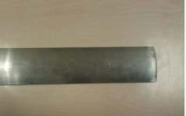
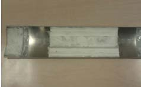
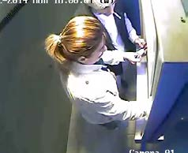
Dolandırıcılar, bazı ATM’lerin para çekme haznesinin önüne yerleştirdikleri ön yüzü para verme haznesinin ön kapağına benzeyen ancak arka kısmında güçlü bir yapışkan bant bulunan metal aparat ile müşterilerin çekmek istedikleri tutarı ele geçirmektedirler. Kapağın arkasındaki orijinal kapak açılmış
parayı müşteriye vermek üzere itmiştir. Ancak sonradan yerleştirilen sahte kapağa takılmış ve para orada beklemektedir.
Görsel 20: Para sıkıştırmada kullanılan aparatlar.
Örnek Olay:
Görsel 21: ATM kamera görüntüleri 1
Yukarıdaki resimde dolandırıcılar 18.00’da ATM’ye aparatı yerleştirmektedir.
Burada resmi verilmeyen mağdur müşterinin para çekme işlemine karşın, dolandırıcıların yerleştirmiş
oldukları kapak nedeniyle para haznesi açılmamış ve müşteri gitmiştir.
32 | Sayfa
IV / Bölüm
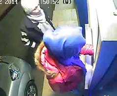
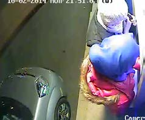
Görsel 22: ATM kamera görüntüleri 2
Hemen arkasından gelen dolandırıcılık zanlıları, para çekme haznesi önüne yerleştirdikleri aparatı sökerek sıkışan 1.000 TL’yi alarak ATM’den ayrılmıştır.
B. KART DOLANDIRICILIKLARI
Ele geçirilmiş bir kimlik ya da bir kimliğin kopyasını üreten dolandırıcı, bu evrak ve başvuruda talep edilen diğer evraklar ile müşteri adına çeşitli kanalları kullanarak kart talebinde bulunmaktadır.
Bankaların kimlik doğrulama süreçlerinde ihtiyaç duyulan tüm bilgileri çeşitli yöntemlerle temin ettiği için sonraki şifre oluşturma, kartı teslim alma gibi aşamaları sorunsuz geçip dolandırıcılık hedefini gerçekleştirmektedir.
Kredi kartı limitini veya karta bağlı hesap bakiyesini boşaltmak için kullanılan bu yöntem, kartın kendisini veya kartla işlem yapabilecek asgari bilgiler ele geçirilerek, yapılan dolandırıcılık türüdür.
Bu yöntem kart hamili bilgileri ile mevcut müşteri adına yeni ürün başvurusu, ek kart çıkarma gibi amaçlar içinde kullanılabilmektedir.
Dolandırıcılık amacıyla kart hamilinin zafiyetinden faydalanarak veya el çabukluğu ile fiziki olarak kartın şifresi ile birlikte çalınması veya kaybolan bir kartın başkası tarafından kullanılmasıdır. Kaybolan kartların limiti şifresiz işlemlerle de boşaltılabilmektedir.
Sahte kartlar, gerçek ve geçerli kartın bilgileri ile oluşturulan kopya kartlardır. Sahte kart yaratabil-menin birinci koşulu orijinal bir kart bilgisini ele geçirilmesidir. Bilginin ele geçirilmesi iki yöntemle olabilmektedir. Birincisi, kart verisini ATM veya POS cihazları üzerine yerleştirilen ya da özel bir cihazla kopyalayarak ele geçirilmesidir. İkincisi ise, kart bilgilerinin depolandığı veri tabanından çalınarak elde edilen kart numaraları sahte kartlara yüklenerek dolandırıcılık amaçlı kullanılmasıdır.
Dolandırıcılar, geçerliliğini yitirmiş kartların manyetik bilgilerini silerek bunun yerine geçerli bir kart verisini yüklerler.
33 | Sayfa
IV / Bölüm

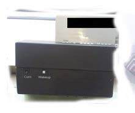
Orijinal kartı üretmek oldukça pahalıdır. Kart üzerindeki hologramın yapılması dâhil pek çok zorlukları vardır.
Bu nedenle manyetiği olan kartlara bilgi yüklemek daha pratik ve ucuz bir yoldur. Bunu yanı sıra “White Plastic”
(Beyaz plastik kart) diye tabir edilen, üzerinde hiç bir görsel logo gibi emareler olmayan kartların manyetiklerine de bu bilgiler aktarılabilmektedir. White Plastic kartlarla zarar yaratabilmek için ya bir üye işyeri ile birlikte kötü niyetli davranılmalıdır ya da kartlar ATM’de kullanılmalıdır.
Başka bir karta aktarılmış sahte kart bilgileri ile gerçek kartın üzerindeki bilgilerin uyuşmaması üye işyeri tarafından yapılabilecek basit ve etkili bir kontroldür.
Görsel 23: Beyaz plastik kartlar
Sahte kart konusunda sıkça kullanılan yöntemler aşağıdaki gibidir: Kart Kopyalama (Skimming):
Kart kopyalama, sahte kartlar konusunda en sık rastlanılan yöntemlerden biridir. ATM’lere kurulan kopyalama düzeneği ve üye işyerlerinde “Skimmer” cihazı ile yapılan kopyalamalardır.
ATM üzerinden yapılan kart kopyalamalarda kart giriş
yuvasına takılan bir aparat ile gerçekleştirilir.
Bu aparat sadece kart manyetiğinin bilgilerini çalmaktadır. Müşterinin girmekte olduğu şifrenin çalınması için ise; sahte klavye (PINPAD) ya da klavyeye odaklanmış ve gizlenmiş bir kamera kullanılabilmektedir.
Nadir de olsa, sahte ATM’ler ile de aynı işlemler yapılmak-Görsel 24: Kart manyetik kopyalama
tadır. Bilinen ATM’lerin yanına bir kullanım için bir kam-aparatı
panya yürüten küçük sahte modeller yerleştirilmekte, ATM
kiosklarının kapı girişlerine kart okuyucu ve şifre giriş cihazı konulabilmektedir.
Dolandırıcılık şebekeleri kartlardan elde ettikleri manyetik alan bilgilerini boş kartlara yazarak, banka kartı özelliğine sahip kopya kartlar oluştururlar. Oluşturulan bu kartlara ait şifreler de bilindiğinden herhangi bir ATM’den müşterilerin hesaplarından para çekebilir ya da harcama yapılabilir.
ATM’de Kopyalama Düzeneği:
Dolandırıcılar parmak izi ihtimalini de gözönünde bulundurarak eldiven ile düzeneklerini ATM’ye ta-karlar. Skimmer cihazı (kopyalama aparatı) ve kamera hazırlığı içerisinde olan dolandırıcıların resimle-rine yanda verilmiştir.
34 | Sayfa
IV / Bölüm
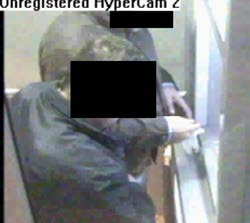
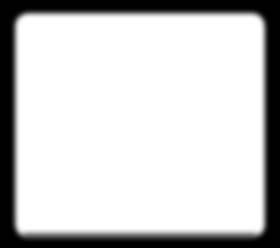
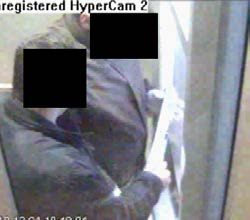
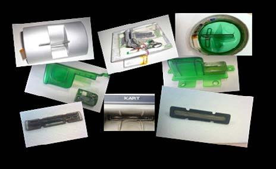
Görsel 25: Kopyalama cihazını yerleştirilmesi Bazı skimmer (kopyalama) cihaz örnekleri aşağıdadır: Görsel 26: Kopyalama cihazları
35 | Sayfa
IV / Bölüm
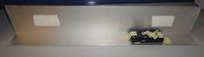
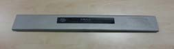


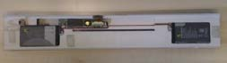
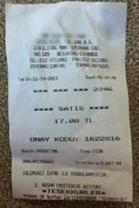
Şifrelerin çalınması için kullanılan kamera düzenekleri aşağıda verilmiştir: Görsel 27: Kamera Düzenekleri
ATM tavanına yapıştırılan plastik düzeneğin içine gizlenen cep telefonunun kamerası kullanılarak kullanıcının klavye hareketleri gözlemlenmektedir.
POS Kaynaklı Kart Kopyalama:
Üye işyerlerinde “Skimmer” cihazı ile yapılan kopyalamalarda ise; genellikle lokanta, dinlenme yerleri, alışveriş mağazalarında çalışan dolandırıcılık şebekesi üyeleri, ödeme yapılmak amacıyla verilen kartları ikinci bir okuyucudan geçirerek kopyalar. Şifreyi çalışan bizzat almaktadır. Nadiren de olsa, POS
makinesinin içerisine bu düzenek teknisyen kılığına girmiş kişiler tarafından da yerleştirilebilmekte bu takdirde şifreleri ‘log’layıp çalabilmektedirler.
Sahte Slip Örneği: Slipteki onay kodu 7 haneli (6 haneli olmalı) ve Slipte POS
Bu kartların manyetik alan bilgileri başka kartlara yükle-nir. Kopyalanmış kartlarla, sahte belgelerle açılmış üye işyerlerinden harcama yapılmış gibi gösterilir ya da sahte kimlik kullanılarak konudan habersiz üye işyerlerinde alışveriş yapılır.
Kartın manyetik alanının kopyalanması özellikle yaz aylarında, turizm bölgelerinde ve büyük şehirlerde daha sık görülmektedir.
Görsel 28: Sahte bir slip.
36 | Sayfa
| Sayf
II / Bölüm
V / Bölüm
IV / Bölüm
V.
BÖLÜM
Dolandırıcılıktan Korunma
38 | Sayfa
IV / Bölüm
Dolandırıcılıkla mücadele konusunda alınacak önlemlerde hem kurumlara hem de kişilere önemli so-rumluluklar düşmektedir. Zaman içinde dolandırıcılar kendilerini geliştirdikçe onlara karşı alınacak önlemler de gelişecektir. İçinde bulunduğumuz 2015 yılı itibariyle bankalar ve müşteri tarafından dolandırıcılıkla mücadele konusunda alınabilecek önlemlere aşağıda detaylı bir şekilde değinilmiştir.
A. Bankalar Tarafından Kullanılan Güvenlik Unsurları Bankalar tarafından kullanılan güvenlik unsurları müşterilerin işlem güvenliklerini ve finansal değerle-rini korumaya yöneliktir. Bunun için bankalar tarafından sunulan internet bankacılığı, mobil bankacılık, telefon bankacılığı veya ATM gibi kanallar için yaratılmış en üst düzey güvenlik önlemlerinin alındığı ortamlardır.
Kullanıcı Adı / Müşteri Numarası:
Banka tarafından müşteriye özel tanımlanan kişiye özel bir koddur.
Parola / Şifre:
Kimlik doğrulamada kullanılan, değiştirilmesi zorunlu kılınmayan gizli alfabetik ve/veya rakamsal karakterler dizisidir.
Tek Kullanımlık Şifre:
Bankalar tarafından sanal ortamlarda erişim hakkı verdikleri müşterilerine tanımlanan ve işlem bazlı da kullanılan değişken kodlarıdır. Tek kullanımlık şifreler, banka tarafından işlem anında otomatik olarak üretilen ve müşteri cep telefonuna gönderilen bir şifre olabileceği gibi farklı cihaz ve yöntemlerle de üretilerek müşteriye iletilir.
İşlem Doğrulama Resmi:
Bazı bankalar tarafından müşteri girişinde gösterilmek üzere belirlenen resim/koddur. Ayrıca bu resimler bazı durumlarda çoktan seçmeli olarak işlem onaylarında da kullanılabilmektedir.
Elektronik İmza:
15.01.2004 tarihli ve 5070 sayılı Elektronik İmza Kanununda tanımlanan kişiye özel elektronik imza sertifikasıdır.
Kişisel Bilgiler:
Gerçek kişi kullanıcıların adı, soyadı, T.C. kimlik numarası, pasaport numarası, vergi kimlik numarası, sosyal güvenlik numarası, kimlik tanımlayıcısı, doğum yeri, doğum tarihi, telefon numarası, adresi, elektronik posta adresi, resim, görüntü ve ses kayıtları, biyometrik veriler gibi bilinmesi halinde tek başına veya diğer bilgiler ile bir araya geldiğinde ait olduğu kişiyi belirleyen ya da belirlenebilir hale getiren bilgi ya da bilgi setidir.
Müşteri Bilgilendirmeleri:
Bankaların internet sitelerinde veya e-posta/SMS yolu ile müşterilerine güvenlik ile ilgili yapmış
oldukları bildirimlerdir.
B. Müşteriler Tarafından Alınması Gereken Önlemler Bankalar tarafından alınan güvenlik önlemleri ile birlikte müşterilerini de öncelikli olarak alması gereken bazı önlemler ve uyması gereken kurallar mevcuttur.
39 | Sayfa
V / Bölüm
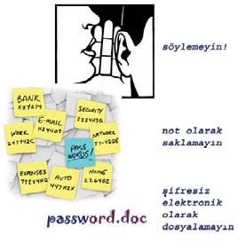
Cep Telefonu Marka ve Modeli:
Müşterinin sanal bankacılık kodlarını ele geçirmek hedefi ile oluşturulan zararlı yazılımlarca, kullanıcının telefonuna ait marka ve model bilgileri istenebilmekte olup, bu bilgiler üzerinden müşteri telefon cihazına zararlı kod yüklenebilmektedir. Sanal ortamda karşılaşılan bu tip bir talep olduğunda bankaya böyle bir uygulama olup olmadığı sorularak mutlaka teyit edilmelidir.
Bilgi Hırsızlığı:
Kişiler finansal veya finansal olmayan bilgilerini özenli kullanmalı ve korumalıdır. Sosyal medya üzerinden paylaşılan bilgilerin gizliliğinin korunması amacıyla bu uygulamaların sağladıkları gizlilik ayarlarının yapılması önerilir.
Bankalardan Gelen Bildirimler:
Ürünlerin güvenliği ile ilgili hususlar hakkında bankalar tarafından verilen bilgilerin/açıklamaların okunması ve belirlenen talimatlara uygun olarak işlem yapılması güvelik açısından büyük önem arz etmektedir. Güvenlikle ilgili herhangi bir tereddüt oluşması durumunda mutlaka bankaya başvurulmalı ve bilgi verilmelidir. Unutulmamalıdır ki, bankalar kişisel bilgileri müşterilerinden e-posta yoluyla asla talep etmezler. Kişisel bilgileri soran e-posta ve/veya e-posta içerisinde yer alan linkler üzerinden bilgi paylaşılmamalı, cevap verilmemeli ve bu tür bir durumla karşılaşıldığında ilgili bankaya bilgi verilmelidir.
Bilgi Gizliliği:
Banka işlemlerinde kullanılan kimliklerin güvenliği son derece önem arz ettiğinden; kimliklerin taran-mış görüntüleri bilgisayarlarda saklanmamalı, fotokopileri rastgele yerlerde bulundurulmamalıdır.
C. İnternet ile Yapılacak Dolandırıcılık Eylemlerinden Korunma Yakınlarınızın isim, doğum tarihi, tutulan takımın kuruluş yılı gibi özel gün ve tarihler, telefon numarası gibi tahmine açık bilgiler şifre olarak
seçilmemelidir. Ayrıca güvenlik için her yerde aynı şifre kullanılmamalıdır. Facebook kullanıcı adınız sanaldunya@cipostal.com ve şifreniz “kapi07”.
Muhtemelen kullandığınız e-posta adresinizdeki
şifreniz de “kapi07”dir.
İnternet bankacılığı şifresi herhangi bir yere
yazılmamalı ve kimseyle paylaşılmamalıdır. Şifreler Bilgisayara veya tarayıcıya kayıt edilmemelidir.
Sadece güvenliğinden emin olunan bilgisayar-
lardan işlem yapılmalıdır. Herkesin kullanımına
açık bilgisayarlara, zararlı yazılım yüklenip yüklenmediği hususunda emin olunamamaktadır.
Bilgisayarın nasıl korunduğu hususunda bir
bilgi yoksa internet bankacılığı gibi riskli işlemler yapılmamalıdır. Bu tür bilgisayarlara yüklenen Görsel 29: Şifre Güvenliği programlar vasıtasıyla kullanıcı adı, şifre ve parola kolaylıkla ele geçirilebilmektedir. İnternet kafe gibi ortak kullanıma açık alanlardaki bilgisayarlarda ve iş yeri bilgisayarı gibi başkalarına ait ya da başka-larının erişimine açık bilgisayarlarda internet bankacılığı işlemi yapılması güvenli değildir.
İnternet bankacılığı girişlerinde sanal klavye kullanımına özen gösterilmelidir.
Bilgisayar ve erişim amacıyla kullanılan cihazlarda kopya veya lisansız yazılım kullanılmamalı, yazılım-40 | Sayfa
V / Bölüm
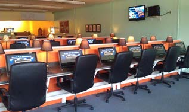
Görsel 30: Herkese açık internet kullanım alanı (İnternet Kafe) ların güncel sürümleri tercih edilmelidir. Lisansı olmayan ve kırık olarak tabir edilen bir programın içine bilgi toplayan bir yazılım atılmış olabilir. Bunun yanı sıra, lisansız yazılımlarda güvenlik açıkları olabileceği gibi, fark edilen açıklar için güncelleme yapılamamaktadır.
İşletim sistemi ve internet tarayıcısının güncel tutulması gerekmektedir. Bilgisayarın korunması ve sorunsuz çalışmasının sağlanması için, yazılımı üreten firmalar tarafından yayınlanan güncellemeler takip edilmeli ve güncellemeler zamanında yapılmalıdır.
Bilgisayarlarda lisanslı “anti-virüs” yazılımları kullanılmalı ve bu yazılımlar güncellenmelidir.
İnternet bankacılığı sitesine girişte adresin doğru bir şekilde tarayıcının adres alanına yazılması ve herhangi bir yönlendirici link kullanılarak internet bankacılığı sitelerine giriş yapılmaması önerilmektedir.
İnternet üzerinden yapılan aramalar sonucu alınan adres bilgilerinin yanlış ve yanıltıcı olabileceği unutulmamalıdır.
Güvenli internet sitelerinde adresin geçerli ve güvenli olduğunu gösteren sertifikalar kontrol edilmelidir.
İnternet güvenlik duvarı (firewall) kullanılmalı ve bu tür uygulamalar bilgisayarlarda aktif tutulmalıdır. Firewall yazılımları, bilgisayarlara yetkisiz erişimi en-gelleyebilir.
Tarayıcıda otomatik tanımlama fonksiyonu kullanılmamalıdır.
Otomatik tanımlama fonksiyonu, daha önce girilen şifreler de dâhil olmak üzere tüm bilgileri saklar. Güvenlik açısından otomatik tanımlama fonksiyonu devre dışı bırakılmalıdır. Ek olarak, “Şifreyi Hatırla (Remember Password)” özelliği ayrıca uzak durulması gereken bir seçenektir. Bu seçenek kullanıldığında, bilgisayarınıza erişen kişinin e-postalarınızı, üyeliklerinizi ele geçirmesi için artık size ihtiyacı yoktur.
Görsel 31: Güvenlik duvarı
kullanılmalıdır
41 | Sayfa
V / Bölüm
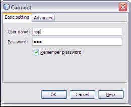
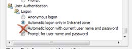
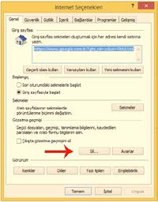
Görsel 33: Şifreleriniz için otomatik tanımlama fonksiyonu kullanılmamalıdır.
Görsel 32: Şifre hatırla seçeneği
seçilmemelidir
İnternet gezgini tarafından indirilen dosyaların sık sık temizlenmesi gerekir. Bazı internet sitelerine girildiğinde, sitelere yüklenen uygulamalar ve küçük yazılımlar ile siteye giren kişiler hakkında bilgi toplanır. Toplanan bilgiler bir metin (.txt uzantılı) dosyasında tutulur. Bu dosyalara “Tanımlama Bilgisi”
(Cookie/Çerez) denir. Çerez dosyaları, hangi sitelerin ziyaret edildiğine ve bu sitelerde internet siteleri üzerinden doldurulan formlara ait bilgilerden oluşur.
Cookie’ler (çerez) virüs yaymak için kullanılamazlar. Ancak bazı özel bilgilerinizin kötü amaçlı kişilerin eline geçmesini kolaylaştırır.
Ek olarak, internet sitelerine girildiğinde bazı gereksiz dosyalar “Temporary Internet Files” dizini altında depolanmaya başlar.
Özel bilgilerin olabileceği bu dosya ve Cookie’leri silebilmek için aşağıdaki adımların takip edilmesi gerekir. Bu işleme “Cache” ön bellek temizliği denir.
İnternet Explorer için:
Araçlar – İnternet Seçenekleri – Göz Atma Seçenekleri menüsünden, sil (Delete) butonuna basarak açılan
penceredeki tüm seçenekleri işaretleyip, sil butonuna basılarak yapılır.
Görsel 34: Internet Explorer Cache Temizliği 42 | Sayfa
V / Bölüm
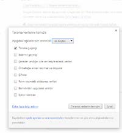
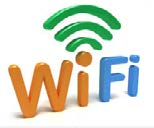
Google Chrome için:
Chrome menü butonu – Geçmiş – Tarama Verilerini Temizle yolundan açılan pencerede, “en baştan” seçeneği ile tüm kutucuklar seçilerek, “Tarama verilerini temizle” butonuna basılarak yapılır.
Bunlara ek olarak tarayıcınıza ait güvenlik seviyesi her zaman için üst seviyede olmalıdır. Otomatik form doldurma ile şifre kayıt etme fonksiyonlarını aktif etmemeniz ise daha güvenli bir kullanım olacaktır.
Görsel 35: Google ChromeCache
Temizliği
Bireysel kullanıcıların internet çıkışında kullandıkları cihazlara (Wi-Fi) şifre koymaları gerekmektedir.
Şifresiz ya da kolay tahmin edilebilir bir Wi-Fi kullanımında bilgilerinizin çalınmasının yanı sıra, suç bazen kullandığınız cihazlar üzerinizden işlenebilir. WEP şifreleme sistemi yerine WPA/PSK şifreleme sistemini kullanmanız ağınızın güvenliğini arttırmada önemli bir unsurdur.
Wi-Fi bağlantınızda modem ayarları içinde “Lowest Common Deno-minator” ayarlarından en yüksek seviyeyi seçerek, WEP ve WPA Görsel 25: Wi-Fi İkonu
şifrelemelerini 128 Bit’lik bir korumaya çıkarabilirsiniz.
Ek olarak, modeminizi kullanmadığınız zamanlarda kapatmanız basit ama etkili bir davranış olacaktır.
Ağ üzerinden oynanan oyunların çoğu bilgisayarın güvenlik duvarını ve aktif virüs programlarını kapatmayı şart koşar. Çünkü bu güvenlik katmanlarının olması oyun sunucusu ile bilgisayar arasındaki bilgi alışverişini yavaşlatır veya tamamen engeller.
O anda bağlanılan sunucudan bir saldırı olmamış olması daha sonra olmayacağı anlamına gelmez.
Bunun önüne geçebilmek için sadece tanınmış ve büyük firmalara ait sunuculara bağlanılması önerilir. Ayrıca güvenlik duvarını kaldırarak, oynanan oyunlardan sonra bilgisayarın tekrar en üst seviyede güvenliğe taşınması doğru olacaktır.
Mobil cihazlara uygulama marketleri dışındaki ortamlardan uygulama indirilmemesi gerekir. Bu ortamlardan indirilen uygulamalar ile cihazınızdaki bilgilerin çalınması mümkündür, işletim sistemi kırılmış
mobil cihazlarla yapılan bankacılık işlemleri güvenlik risklerine açıktır. Zararlı uygulamalardan korun-mak için cihaz ayarlarınızda bulunan “market dışı uygulamaların yüklenmesi” seçeneğinin işaretli olmaması gerekir.
43 | Sayfa
V / Bölüm
D. Telefon ile Yapılacak Dolandırıcılık Eylemlerinden Korunma Telefon bankacılığı şifrenizi herhangi bir yere yazmayınız. Bilgisayara veya tarayıcıya kayıt etmeyiniz.
Yakınlarınızın ismi, doğum günü, taraftarı olduğunuz takımın kuruluş yılı gibi özel gün ve tarihleri, telefon numaranız gibi tahmine açık bilgileri şifre olarak kullanmayınız.
Telefon şifrelerini telefona tuşlayarak giriniz. Şifreleriniz sözlü veya yazılı olarak talep edilirse kesinlikle bilgi vermeyiniz; görüşmelerinizi derhal sonlandırarak bankanıza konu hakkında bilgi veriniz.
Telefon cihazını vererek size yardım etmek isteyen kişilerin teklifini kabul etmeyiniz.
Başkalarına ait ve kamuya açık alanlardaki telefonlardan görüşme yapmak için, aradığınız numarayı kendiniz çeviriniz. Numarayı doğru çevirdiğinizden emin olunuz.
Yaptığınız görüşmeler sonrasında, tuşladığınız işlem şifrelerinizin telefon hafızasına alınmadığından emin olunuz.
Yaptığınız telefon görüşmeleri sırasında, şüpheli şahıslar tarafından izlenmediğinizden ve dinlenme-diğinizden emin olunuz.
E. ATM ile Yapılacak Dolandırıcılık Eylemlerinden Korunma Şifreniz size özel bir bilgidir. Kimseyle paylaşmayınız ve kullanım esnasında gizliliği hususunda gerekli özeni gösteriniz. Şifrenizi ATM’de kullanırken gizleyin, çevrenizde şifrenizi görebilecek kişilerin olmadığına emin olunuz. Şüphelendiğiniz durumlarda bankanızı bilgilendiriniz.
ATM’de yardım teklif eden şüpheli kişilerden yardım almayınız, bunun yerine varsa banka görevlisin-den yoksa çağrı merkezlerini arayarak yardım alınız.
ATM’lerden para çekerken (özellikle hafta sonu) ATM cihazında herhangi bir farklılık olup olmadığını kontrol ediniz.
İşlem yaptığınız ATM’de şüpheli bir durumla karşılaştığınızda (özel olarak yerleştirilmiş bir cihaz vb.) işlem yapmayarak derhal bankanıza haber veriniz. Çevrenizde şüpheli şahıslar olmadığından emin olunuz.
Kartınızın ATM’de sıkışması, alıkonulması gibi durumlarda size yardımcı olmak isteyen kişilerden yardım almayınız. ATM’de kartınız kalmış ise kötü niyetli kişiler “ATM’ye tekrar şifrenizi girmeniz halinde kartınızın iptal edileceğini” belirtebilir ve hatta “kendi cep telefonları ile bankanızı aramanıza yardımcı olmayı” teklif ederek kart şifrenizi elde edebilirler. Bu tür yardımları kabul etmeyiniz. Varsa kendi cep telefonunuzla veya en yakındaki güvenli bir telefonla bankanıza derhal haber veriniz.
F. Kart ile Yapılacak Dolandırıcılık Eylemlerinden Korunma Kart bilgileri kişiye özeldir ve bu bilgilerin gizliliğini (kart numarası, son kullanma tarihi, güvenlik kodu/
CVV2 kodu) koruyunuz. Güvensiz ortamlarda kullanmayınız, üçüncü kişilerle paylaşmayınız.
Kart ve kart ile birlikte kullanılan; kartın kendisi, şifre ve mesaj gelen cihazlar, şifre üreten cihazlar gibi unsurları koruyunuz.
44 | Sayfa
V / Bölüm
Bankanıza vermiş olduğunuz iletişim bilgilerinizin (e-posta adresi, adres, telefon numarası, vb.) gizliliğini korumaya özen gösteriniz
Kartlı dolandırıcılıklarla ilgili kullanılan ürünlerin güvenliği hakkında bilgi sahibi olmanız son derece önemlidir. Banka internet sitelerinde güvenlik hakkındaki sayfalar titizlikle takip edilebilir.
Kartınızla yaptığınız işlemlerde ödeme bilgilerini kontrol ediniz.
Kredi kartı ile sanal ortamlarda yapılan alışverişlerde sanal kartı tercih ediniz.
Bankaya verdiğiniz bildirim adreslerinizin değişmesi durumunda bankanızı bilgilendiriniz ve değişik-likleri bildiriniz. Banka hesap durumunun ve faturaların her zaman yeni adrese gönderildiğinden emin olunuz. Adres değişikliğinin bildirilmemesi durumunda eski adrese gönderilen hesap özeti/durumu ve fatura bilgilerinin kötü niyetli kişilerin eline geçme olasılığı olduğunu unutmayınız.
Güven vermeyen ve itibarı olmayan internet siteleri üzerinden alışveriş, telefonla veya mektupla sipariş alan firmalar ile kart ve kimlik bilgilerini paylaşmayınız. Sanal alışveriş yapılan sitelerde 3D
güvenlik özelliği olan siteleri tercih ediniz.
Adınıza bir başkası tarafından yapılan harcamalardan haberdar olmanız için hesap kesim cetvelleri kontrol ediniz ve güncel dönem borçlarınızı düzenli takip ediniz.
Şüpheli durumlarda ivedi olarak bankanızla iletişime geçip olay hakkında bankanıza bilgi veriniz.
45 | Sayfa
V / Bölüm
BÖLÜM
46 | Sayfa
VI / Bölüm
Aşağıda bilişim, teknoloji ve dolandırıcılık literatüründe sıkça karşılaşılan bazı terimlerin İngilizce ve Türkçe karşılıkları ile açıklamalarına yer verilmiştir.
NO
TÜRKÇE
İNGİLİZCE
Abone Kimlik
Subscriber Identifi-
Mobil telefonların GSM servis sağlayıcıdan hizmet
Modülü
cation Module (SIM) almasını sağlayan mikroçip.
2
Açılır Kapanır
Pop-Up
Bir siteye girildiği zaman onunla birlikte açılan
Pencere
reklam pencerelerine pop-up denilmektedir.
3
Alfanümerik
Alphanumeric
Harfleri, rakamları, bazen de güdüm karakterlerini, özel karakterleri ve boş karakterleri kapsayan kü-medir. (Ör. Şifrelemelerde "alfa nümerik karakterler giriniz" şeklinde uyarılarla karşılaşılabilir.) 4
Alternatif
Alternative Distribu- Müşteri ile yüz yüze gelinmeden gerçekleştirilen Dağıtım Kanalları tion Channels (ADC) bankacılık işlemlerini sağlayan araç veya ortam-
(ADK)
lardır. (Ör. İnternet Bankacılığı, Çağrı Merkezi, ATM
vb.)
5
Anonim
Anonymous
Kimlik belirtilmeyen durum ve ortamlardır.
6
Arama Motoru
Search Engine
İnternet üzerinde bulunan içeriği aramak için kul-
lanılan bir mekanizmadır. (Ör. Google, Yandex,
Yahoo, vb.)
7
Atak, Saldırı
Attack
Bir bilgisayar sistemine izinsizce girme, bir web
sayfasını kirletme, bir Truva atı sokma veya bir kodu kırma, vb. girişimlerdir.
8
Ateş Duvarı
Firewall
İnternet üzerinden bir sisteme girişleri koruma
amaçlı olarak kısıtlayan/yasaklayan ve genellikle bir internet gateway servisi (ana internet bağlantısını sağlayan servis - ağ geçidi) olarak çalışan bir bilgisayar üzerinde bulunan güvenlik sistemine verilen
genel addır.
9
Bağlantı
Link
İnternette bir sayfa içinde bağlantı sağlanarak baş-ka bir sayfaya yönlendirme sağlayan fonksiyondur.
Bağlantılar genellikle altı çizgili ya da farklı renkle-rde görülür. Üzerine geldiğinizde mouse el işaretine dönüşür.
10
Bilgi Sızıntı En-
Data Leakage Pre-
Veri sızıntısı engelleme.
gellemesi
vention (DLP)
11
Bilgisayar Kor-
Hacker
Şahsî bilgisayarlara veya çeşitli kurum ve kuruluşlara sanı
ait bilgisayarlara ve ağlara izinsiz olarak giriş yapan kişilere denir.
12
Biyometri
Biometer
Kullanıcının fiziksel ve davranışsal özelliklerini tanı-yarak kimlik saptamak üzere geliştirilmiş bilgisayar kontrollü, otomatik sistemler için kullanılan genel bir terimdir.
13
Çerez
Cookie
Tarayıcı üzerinde tutulan tanımlama bilgisidir.
14
Çevirim Dışı
Off-line
Bilgisayar sisteminde sunucuya bağlı olmama ha-
lidir.
15
Çevirim İçi
On-line
Bilgisayar sisteminde sunucuya bağlı ve çalışır durumda olma halidir.
16
Doğrulama
Authentication
Elektronik bankacılıkta, kimlik denetimi, yetki denetimi; aslına uygunluğu kanıtlama, kimlik, yetki ve sayışım denetim protokolleridir.
47 | Sayfa
VI / Bölüm
TÜRKÇE
İNGİLİZCE
Dolandırıcılık
Fraud
Bankacılık sisteminde dolandırıcılık, sahtekârlık, hırsızlık, çıkar amaçlı yapılan kötü niyetli girişimleri ifade eder.
18
Eklenti
Attachment
Bilgisayarda bir mesaja (e-posta) eklenen dosyadır.
19
Ekran Kaydedici
Screen-Logger
Ekran görüntüsü alan casus yazılımlardır.
20
Elektronik Bank- Online Banking
Şubesiz bankacılık. Alternatif Dağıtım Kanalları üze-acılık
rinden yapılan bankacılık işlemleridir.
21
E-Posta ve Tele-
Mail Order/Tele-
İnternet veya Telefon üzerinden alışveriş işlemidir.
fon ile Sipariş
phone Order (MO/
TO)
22
Erişim
Access
Elektronik bankacılıkta bilgisayar öz kaynaklarını kullanma olanağını elde etme olarak sıkça kullanılmaktadır. Bir sisteme erişim hakkını, kullanma hakkını elde etmek olarak da bilinir.
23
Etkinleştirme
Activation
Elektronik bankacılıkta sunulan bir ürünün kimlik
doğrulama koşuluna bağlı olarak kullanıma açılması süreci olarak kullanılmaktadır.
24
Flaş Oynatıcı
Flash Player
Flash Player Çeşitli ekran ve tarayıcılarda ben-
zersiz uygulama, içerik veya videoların hatasız
görüntülenmesini sağlayan tarayıcı tabanlı bir me-
dya oynatıcısıdır.
25
Güvenli Hip-
HyperText Transport İnternet ağında data transfer protokolüdür ancak er-Metin Transfer Protocol Secure
SLL ile şifrelenmektedir.
Protokolü
(HTTPS)
26
Güvenli Soket
Secure Sockets Lay- Sunucu ile istemci arasındaki iletişimin şifrelenmiş
Katmanı
er (SSL)
şekilde yapılabilmesine imkân veren standartlaşmış
bir teknolojidir.
27
Hesap Ele
Account Takeover
Kredi kartı limitinin veya karta bağlı hesap bakiyesi Geçirme
boşaltmak için kullanılan kartın kendisi veya kartla işlem yapılabilecek asgari bilgileri ele geçirilmesiyle yapılan dolandırıcılık türüdür.
28
Hiper-Metin
Hypertext Transfer
İnternet ağında data transfer protokolüdür.
Transfer Pro-
Protocol (HTTP)
tokolü
29
İndirme
Download
Elektronik bir ortamdan dosya çekme işlemi.
30
İnternet
Internet Fraud
Bankaların ortak paylaşımda bulunduğu internet
Dolandırıcılığı
Alarm System (IFAS) dolandırıcılığı alarm sistemidir.
Alarm Sistemi
31
İnternet Protokol Internet Protocol
İnternet adresleme sistemidir. (Ör. http//www.
Adresi
Address (IP)
ornek.com adresi aslında 195.175.68.4 rakamlarına
karşılık gelir.)
32
Kablosuz Erişim
Wireles Fidelity (Wi- Kablosuz erişim noktaları aracılığı ile yerel alan ağı-Fi )
na bağlanmayı ifade eder.
33
Kabloya Eşdeğer Wired Equivalent
Kablosuz ağ bağlantılarında (Wi-Fi) Veri bağ ta-
Mahremiyet
Privacy (WEP)
bakasında çalışan bir şifreleme yöntemidir.
34
Kart Hesabını Ele Account Takeover
Kart bilgilerinin veya fiziki olarak kartın dolandırıcı Geçirme
tarafından ele geçirilmesidir.
35
Kırılmış Yazılım
Crack
Orijinal olmayan, program, oyun vb. uygulamaları
orijinal yapmamıza yarayan korsan dosyalardır.
48 | Sayfa
VI / Bölüm
TÜRKÇE
İNGİLİZCE
Koklama
Sniffing
Birden fazla bilgisayar arasında yapılan bilgi
alış-verişini gizlice yakalamaya ve bilgi edinmeye
"sniffing" denilir.
37
Kötü Amaçlı
Malware
Bir virüs, solucan ya da Truva Atı gibi zarar verici Yazılım
işlemler yapabilen bilgisayar programıdır.
38
Kullanıcı
User
Bir sistemi, uygulamayı kullanan olarak tanımlanan kişidir.
39
Laminasyon
Lamination
Farklı yüzeylerin ve katmanların, ısı, basınç ve
yapıştırıcılar ile bir araya getirilerek tek bir katman haline getirilmesi işlemidir.
40
Lazer Perfore
Laser Perfore
Görsellerin üzerine yerleştirilmiş özel işaret veya simgelerdir.
41
Manyetik
Skimming
Plastik kart kopyalama dolandırıcılığına verilen
Kopyalama
addır.
42
Merkezi Nüfus
MERNIS
Merkezi Nüfus İdaresi Sistemidir.
İdaresi Sistemi
43
Mobil İletişim
Global System for
Cep telefonu iletişim sistemidir.
İçin Küresel
Mobile Communica-
Sistem
tions (GSM)
44
Morötesi
Ultraviyole (UV)
Dalga boyu 100 ile 400 nm arasındaki ışınıma denir.
45
Oltalama
Phishing
Dolandırıcıların rastgele kullanıcı hesaplarına gön-derdikleri, kullanıcının özel bilgilerini (şifre, parola, müşteri numarası, kullanıcı adı, kredi kart numarası vb.) elektronik ortamlarda ele geçirilmesini amaçlayan saldırı türüdür.
46
Ortadaki Adam
Man In the Middle
Saldırganın sunucu ve istemci arasına girerek kul-
Saldırısı
Attack (MitM)
lanıcı bilgilerini ele geçirmeyi amaçlayan saldırı türüdür.
47
Otomatik Para
Automatic Teller
Özellikle para çekme/yatırma için kullanılan ve
Çekme Makinel- Machine (ATM)
bunu yanı sıra hesap hareketleri, havale, eft, fatura eri
ödeme gibi işlemler için kullanılan insansız çalışan uçbirim aygıtıdır.
48
Ön Ödeme
Advance-Fee Fraud 419 dolandırıcılığı olarak da bilinir, ön ödeme yoluy-Dolandırıcılığı
(AFF)
la dolandırıcılık yapılmasıdır.
49
Para Transferi
Money Transfer
Para gönderim işleminde Western Union tarafından
Kontrol Nu-
Control Number
işleme özel oluşturulan bir numaradır.
marası
(MTCN)
50
Reklam Bandı
Banner
İnternet sitelerinde tanıtım, reklam amacıyla yer-
leştirilen, farklı boyutlarda, sabit ya da hareketli olabilen panolardır.
51
Reklam E-Postası SPAM E-mail
Kullanıcı tercihinden bağımsız olarak yapılan her
(İstenmeyen)
türlü elektronik posta gönderimidir.
52
Sahte Alan Adı
Fake Domain
Sahte alan adlarına denir. Ör. www.sahtealanadi.
com
53
Sanal Özel Ağ
Virtual Private Net-
İnternet üzerinden başka bir ağa bağlanmayı
work (VPN)
sağlayan bağlantı çeşididir.
54
Satış Noktası
Point Of Sales Ter-
Kredi kartlarının işlem yapabilmesi için kullanılan minal (POS)
cihazdır.
49 | Sayfa
VI / Bölüm
TÜRKÇE
İNGİLİZCE
Solucan
Worm
Network üzerinde kendilerini bir makineden baş-
ka bir makineye kopyalayabilen, kendi kendilerine
çoğalma yeteneklerine sahip olan zararlı yazılım-
lardır.
56
Sosyal Ağ
Social Network
Sanal ortamlarda sosyal iletişim kurmaya yarayan
ağlardır. (Ör: Facebook, Twitter, Instagram, vb.)
57
Sunucu
Server
Diğer bilgisayarlara veri sunan çok daha kapasiteli bilgisayara verilen addır.
58
Swift
Swift
Tüm dünyadaki bankalar arasında elektronik fon
transferi standardı sağlayan bir sistemdir.
59
Şifre Üreten
Token
Bir sisteme giriş için şifre üreten cihazlara ya da Cihaz
yazılımlara denilir. (hard token/soft token)
60
Şifreleme
Encryption
Gizlenmek istenen bir bilginin (metin, fotoğraf, ses kaydı, kişisel bilgiler vb.) bir algoritma yardımıyla bir başkası tarafından okunmasını ya da değiştirilmesini engellemek için yapılan şifrele işlemine denir.
61
Tarayıcı
Browser
"www." üzerinde dokümanların transfer edilip görüntülenmesini sağlayan programlara "browser (tarayıcı)" adı verilir. (Ör. İnternet Explorer, Google Chrome, Firefox, vb.)
62
Tarayıcıdaki
Man In The Browser İnternet tarayıcısı üzerine zararlı yazılım yerleştir-Adam Saldırısı
(MitB)
ilerek kullanıcı bilgilerini ele geçirmeyi amaçlayan saldırı türüdür.
63
Tek Kullanımlık
One Time Password Online bankacılıkta işlem onayları veya login ekran-Şifre
(OTP)
larında kullanılan ek güvenlik sağlayan tek kullanımlık şifredir.
64
Truva Atı
Trojan Horse
Bir bilgisayar programına bağlanarak gizlenen,
tahribatını yaparken programın olağan çalışmasına
izin veriyormuş gibi gözüken virüslerdir.
65
Tuş Kaydedici
Key-Logger
Klavyeden basılan her tuşun loglarını tutan casus
yazılımlardır.
66
Tuş Takımı
Pin Pad
POS cihazlarında, kart sahibinin şifresini özel olarak girmesi için kullanılan cihazlara denir.
67
Uyarı
Alarm
Dolandırıcılık ve suiistimal takip ekiplerinin
olağandışı bir duruma almış oldukları her türlü ika-zdır.
68
Varolmayan Kart Card not Present
Bilgileri kullanılabilmesi için dolandırıcı tarafından (CNP)
oluşturulmuş fakat fiziki olarak basılmamış karttır.
69
Veri Kanalı
Port
Bir bilgisayarla dış aygıtlar arasındaki kablo ile iletişimi sağlayan veri kanalıdır. (Ör. SCSI, USB, vb.) 70
Virüs Önler
Anti-Virus
Bilgisayar güvenliğini sağlayabilmek için bazı
virüsleri temizlemeye yönelik programlardır.
71
Vishing
Vishing
Kimlik avcılarının, IP üzerinden ses (VolP) uygulamasını kullandığı ses ile aldatma yöntemidir. Telefonla kişisel bilgilerin ele geçirilmesidir.
72
Western Union
Western Union (WU) Bir para transfer sistemidir.
73
Wi-Fi Korumalı
Wi-Fi Protected
Wi-Fi üzerinde, “WEP” şifreleme sisteminden daha
Erişim
Access (WPA)
güvenli ve daha yeni bir teknolojidir.
74
Yerel Hizmet Ağı Local Area Network Ev, okul, laboratuvar, iş binaları vb. gibi sınırlı coğra-
(LAN)
fi alanda bilgisayarları ve araçları birbirine bağlayan bir bilgisayar ağıdır.
75
Yüklemek
Upload
Elektronik bir ortama dosya yükleme işlemidir.
50 | Sayfa
VI / Bölüm
Nispetiye Cad. Akmerkez B3 Blok Kat 13 34340 Etiler/İstanbul Tel: 0212-282 09 73 | Faks: 0212-282 09 46
E-posta: tbb@tbb.org.tr | www.tbb.org.tr
52 | Sayfa
II / Bölüm